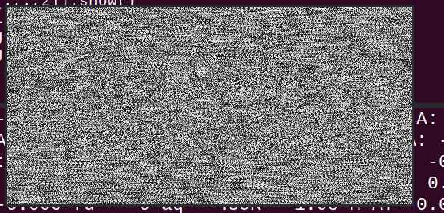
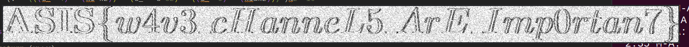

Notes from CTF tasks (math/programming-related)
Table of Contents
About
Who: tope of mode13h (two-man team from Norway)
Contact: tope#9134@Discord (I am friendly to the point of being flirtatious,
so feel free to message me)
Audience: I am writing these notes to some imagined fellow CTFer who looked at the same tasks that I did, but missed some critical step for the solve, or perhaps someone who did solve them and just wants to compare notes. I’ll rarely re-post the full problem as given in the CTF, nor do very detailed expositions. For the time being this isn’t intended as a pedagogical resource. The target audience (“you”) are not complete beginners, some facility with math is assumed.
Content: My favorite tasks are of the “puzzle”1 variety. In CTFs these would normally be found under misc and crypto. My safe space is the intersection between programming and mathematics.
Motivation: I am fascinated by the generalities behind puzzles–i.e. their mathematical expression–and I love solving problems with programming. Fascination gives off a glow, and this glow-energy is what I’d like to call motivation. The competitive element of CTFs has little bearing, and I tend to avoid CTFs with uninteresting problems.
N1CTF2020
General Comments
An A+ CTF! An incredible amount of tasks, from mid-tier to top-tier difficulty level. Objectively the task set alone deserves a ~100 rating on CTFTime3.
I did the crypto tasks and will outline solves for those below. I also glanced at some of the “easier” tasks in misc and web, but even the entry-level tasks in those categories were beyond me.
Personal downside #1: very biased toward web, rev, and pwn, which I am pretty clueless about, though those are the “true” staples of CTF. I realize this is more like a pure upside for most people.
On the end of the first day there were only three crypto tasks released yet more than fifteen(!?) web, pwn, and rev tasks out. I sat around twiddling my thumbs a bit, feeling pretty useless.
The only misc-like task I saw involved PHP, which is more of a mental plague than a programming language4. I played around with it a bit, but finally just went to bed feeling a little bit dumber and somewhat frustrated because I thought all tasks had been released and that I’d be useless for the rest of the CTF.
Personal downside #2: Two more crypto were released just after I’d gone to sleep on day two, so I only had a few hours for them when I woke up. Although the new tasks were a nice surprise, the timing was very unfortunate for me.
Plea for organizers in general: please consider having all tasks out by the mid-way point of the CTF. If not, then communicate your planned task release schedule so it’s possible to better manage our time?
We ended up placing 13th5.
crypto:VSS
You’re given some code which generates a QR-code image of the flag and uses that image to create two new randomized images which–when combined–would reconstruct the original (albeit transposed? I am guessing, I didn’t actually run the code). You also receive one of the images generated. It struck me as a little cryptic.
I ignored the whole visual threshold part of the task and noted it uses Python’s random module to generate the pixels in the output images. That’s a lot of random data, and the QR-code image it’s based on has a lot of known fixed output. After double-checking that the QR-image had enough known pixels (you get to reverse one bit of state per pixel) and where it was (it would be hell if it wasn’t contiguous), it reduces to a “standard” reverse-the-RNG-state task.
For the reversing Python’s MT the easy way you need \(32 \cdot 672\) contiguous bits of output. That is if you don’t have to worry about missing state. You need to undo the tempering that MT does to its output words:
def untemper(x): x ^= (x >> 18) x ^= (x << 15) & 0xefc60000 x ^= ((x << 7) & 0x9d2c5680) ^ ((x << 14) & 0x94284000) ^ ((x << 21) & 0x14200000) ^ ((x << 28) & 0x10000000) x ^= (x >> 11) ^ (x >> 22) return x
You combine words i, i+1, and i+M to get word i+N:
tmp = w[i][31] ^ w[i+1][:31] # using slice notation to select bits w[i+N] = tmp>>1 ^ w[i+M] ^ (A if tmp[0] else 0)
M, N, A are constants from _randommodule.c in CPython source code. Then
you reapply the tempering (see aforementioned .c source) and it should match
Python’s output. That’s the basic idea.
It was a task which is very easy to realize the solution but rather painful to
implement. I struggled with infinite little indexing bugs. The headache I got
from trying to directly indexing into bin(random.getrandbits(...)) was not
worth it. (Bits within words run from bit \(2^{31}\) to \(1\), but the words are in
little-endian order.) I even had bugs in the final solution as some randomness
was leaking through, but fortunately QR-codes are highly redundant, so I didn’t
care. Then again I probably did things needlessly complicated by
reverse-generating the original QR-code instead of simply generating the
“companion” image to the one shared.
Apart from headaches it gave me with my own bugs, it’s actually a fairly clever task, because there aren’t any obvious “hints” that points you in the right direction, so it might take a while to notice. I was pretty lucky.
crypto:FlagBot
Several random 256-bit elliptic curves are generated and used to do a standard key exchange to AES-encrypt the flag. The curves are all asserted to be non-smooth and resistant to MOV attack. You get the public output of the exchanges as well as the encrypted messages. It’s a very nice and clean task with a likewise straightforward implementation. It was a pure blessing after the indexical spaghetti that was VSS.
The key to realize is that the secret is reused (for both client and server). The generated random curves have a lot of small random subgroups, so you can solve the discrete log in those subgroups (multiply the generator and public keys by \((p-1)/q\) to put it in the subgroup of size \(q\)), get constraints like \(secret = x_i \pmod{q_i}\), and then do Chinese Remainder when you have enough. A partial Pohlig-Hellman, if you will.
I think I did most of this task in REPL, but the pseudo-code sketch would be:
crt_r, crt_s = [], [] for ec,pk_r,pk_s in data: order = ec.order() for f in small_factors(order): crt_r.append( (babystepgiantstep(f, pk_r*(order/f), g*(order/f)), f) ) crt_s.append( (babystepgiantstep(f, pk_s*(order/f), g*(order/f)), f) ) r,s = crt(*crt_r)[0], crt(*crt_s)[0]
crypto:curve
In this task (against a live server) you’re asked for elliptic curve parameters \((p, a, b)\) and two points \((G_1, G_2)\) and then have to solve 30 rounds of distinguishing \(G_1 \cdot r \cdot s\) from \(G_1 \cdot x\) when given \(G_1 \cdot r\) and \(G_2 \cdot s\) (for random secret integers \(r, s, x\)). It will throw an exception if you give it a singular curve or points not on the curve.
At first glance I thought this was too similar to FlagBot, because there are
no checks against the points being in a small subgroup. I knew you could also
use trace 1 curves on which the much-copy-pasted Smart attack works, but I only
have that code in some Sage docker; I wanted to use my own comfortable code and
homemade Python libraries. Besides, I got this: I thought it would just be a
matter of trivially putting them into small subgroups and solving the CRT again.
A bit too easy, maybe…
Yeah, after a while I realized my oops: it required a very large prime modulus
\(p\) and calls E.order() on the curve – and there’s a timer on the program.
The E.order() call takes well over a minute, sometimes several minutes, and so
there’s no time to do the loop. I wasted some time trying to find random curves for
which E.order() was smooth or took less time but…
Finally I relented and tested E.order() on a curve with \(|E_p| = p\). It was
instant, of course, so… sigh Copy-pasted Sage code it is, then.
Now the problem was to generate curves with trace 1, which I didn’t know how to
do, but poiko talked of a DEFCON task which had involved generating such
curves and gave me a paper: http://www.monnerat.info/publications/anomalous.pdf
From the paper I figured I wanted curves under primes \(p = 11 m (m+1) + 3\) with
\((a,b)\) which gives j-invariant equal to \(-2^{15}\), I quickly found plenty such
curves. Then copy-paste Smart_Attack() and blah, blah, the usual stuff. (I
really despise copy-pasting.) A bit unrewarding due to my stubbornness, but I
have to admit it was a good task in the end, even if the “hidden” constraint of
“the given curve must also have a fast E.order()” was a bit devious6.
crypto:easy RSA?
A fun task which had two stages.
It generates some RSA-modulus \(n = p*q\) and encrypts a large vector with lots of numbers. These numbers are the vector (dot) products between the flag and random numbers, offset by some small error, and then modulo a small prime. You are given the random numbers used for free, but the errors are secret.
The primes are generated in a truly bizarre way:
mark = 3**66 def get_random_prime(): total = 0 for i in range(5): total += mark**i * getRandomNBitInteger(32) fac = str(factor(total)).split(" * ") return int(fac[-1])
It generates a number that has “small” digits in base-\(3^{66}\) and returns the largest prime in the factorization of this number. That’s one of the oddest ways to generate primes I’ve seen.
But (the “a-ha” moment) it means that \(n\cdot x\) also has “small” digits in base-\(3^{66}\) for some \(x\) which is itself also “small” (compared to \(n\)).
I used a lattice like
[ n * HH, 0, 0, 0, 0, 0, 0, 0, 0, 0, 1], [ 1 * HH, HL, 0, 0, 0, 0, 0, 0, 0, 0, 0], [B**1 * HH, 0, HL, 0, 0, 0, 0, 0, 0, 0, 0], [B**2 * HH, 0, 0, HL, 0, 0, 0, 0, 0, 0, 0], [B**3 * HH, 0, 0, 0, HL, 0, 0, 0, 0, 0, 0], [B**4 * HH, 0, 0, 0, 0, HL, 0, 0, 0, 0, 0], [B**5 * HH, 0, 0, 0, 0, 0, HL, 0, 0, 0, 0], [B**6 * HH, 0, 0, 0, 0, 0, 0, HL, 0, 0, 0], [B**7 * HH, 0, 0, 0, 0, 0, 0, 0, HL, 0, 0], [B**8 * HH, 0, 0, 0, 0, 0, 0, 0, 0, HL, 0],
to find \(x\). There might be better ways, but it worked. Now to factor. Trivially you can find the first and last digits of the primes. There’s probably some more clever way to do the whole thing, but I just did the dumb thing and used the base-\(B\) digits of \(n\cdot x\) as coefficients for a polynomial over \(\mathbb{Z}_p\) for some large \(p\) and factored that. That gave me two numbers back (when multiplied so the least/most significant digits match), each of which shared one of the big primes with \(n\). This was all a bit rushed because it took me too long to discover the “trick” of finding \(n \cdot x\) and I just did everything in the REPL at this point, using my own utility libraries and NTL wrapper.
So now I had \(n = p \cdot q\) and could decrypt the vector to get a big system of linear relations with “small errors” modulo some small prime. The lattice is life, the lattice is love. Maybe there’s a more clever way to solve this as well, but did I mention I was a little pressed for time at this point? The system in its entirely was too big for my poor, slow LLL, but a small random subset of equations worked just fine (every equation involved the entire flag).
crypto:babyProof
I “solved” this task but was a little too late. I had already realized the solution by the last hour or two, but underestimated how many datasets I needed and wasted some time with self-doubt, double-checking, and massaging uncooperative lattices. When the competition ended I went to eat and by the time I got back there was enough data and I got the (bittersweet) flag easily.
Like FlagBot it’s a deceptively clean and simple task, where you don’t realize
the problem until that sweet “a-ha!” moment. The server uses generated DSA
constants (a (huge) prime \(p\), a generator \(g\) for a large prime (\(q\)) subgroup
of \(\mathbb{Z}_p\)) to prove that it knows \(x\) in \(y=g^x \pmod p\) by giving you
\(y\), \(t=y^v \pmod p\) (for some secret ephemeral key \(v\)) and \(r = v - c \cdot x
\pmod q\) with \(c\) being a SHA256 constant the recepient can derive from \((g, y,
t)\). It looks respectable and above the board at first glance…
But basically you need to forget everything I just said and ignore the whole business with \(p\) and discrete logs. With \(r\) you’re given a system of inequalities like \(c_i \cdot flag + r_i < flag \pmod{q_i}\), because the ephemeral key is erroneously generated to be less than \(x\) which was asserted to be 247 bits in the code (while \(q\) is 256 bits), so each equation ought to reveal a little bit more about \(x\). It is clearly another lattice problem.
I’m not sure if there are any better or more clever ways to set up the lattice, but what worked for me in the end was the most obvious and straightforward:
[[1, 0, c0, c1, ..., cn], [0, 2^248, r0, r2, ..., rn], [0, 0, q0, 0, ..., 0] [0, 0, 0, q1, ..., 0] [0, 0, 0, 0, ..., qn]]
b'n1ctf{S0me_kn0wl3dg3_is_leak3d}' Since I can no longer enter it on the site,
I’ll leave it here to be sad and alone. :(
Hack.lu 2020
General Comments
An unfortunate step down from last weekend’s N1CTF2020 even though this one has
a much higher rating on CTFTime.
DISCLAIMER: I’m judging with very biased goggles here; I’m sure web/rev/pwn were all kinds of excellent and top notch woo-hoo, but misc and crypto was very disappointing and demotivating for this rating bracket and I tapped out early. It felt too easy and/or uninspired and/or unoriginal.
I am also going to sound incredibly negative. It wasn’t that bad, but it definitely wasn’t a 100-point CTF, and that’s the stance I’m critiquing from. The tasks I looked at felt like they belonged in the 50-70 range.
crypto:Pwnhub Collection which was (unnecessarily) gated behind rev would probably be my pick for “best” crypto-task, because it actively combines two related techniques in a sensible way. crypto:Conquering Premium Access had a copy-pastable solution through Google, which was not fun to discover. crypto:Bad Primes was somewhat trivial7. misc:BabyJS was cute but that’s about it. More info about them below. (As usual I will just outline the solves, these are just notes that should allow anyone who attempted or failed the problems to solve them.)
crypto:Bad Primes8
You’re given \(c = flag^e \pmod{p\cdot q}\) with all numbers known except \(flag\). The caveat is that \(e | p-1\) so there’s no \(d = e^{-1} \pmod{p-1}\) for recovering the flag directly. (Finding the flag \(\pmod q\) works trivially, so we ignore that part.)
So finding the e-th root of \(c \pmod p\) is the interesting part. You can do it in two different ways:
The I-don’t-want-to-learn-anything Way (also known as
I’m-a-professional-I-don’t-have-time-for-this): press the [Skip This Step]
button and do GF(p)(c).nth_root(e) in Sage.
The Problem Child Way:
So we want a number \(x\) such that \(x^e = c \pmod p\) with \(p-1 = e\cdot s\) and \(gcd(s,e) = 1\).
The a-ha comes after exploring the hunch that \(s\) is important here. Look at \(j = e^{-1} \pmod s\). This means means \(j\cdot e = 1 + k\cdot s\) for some \(k\). In fact, it means that \(j\cdot e\cdot e = e + k\cdot (p-1)\). A-ha! So now \((c^j)^e = c^{e \cdot j} = c^{k\cdot s + 1} = x^{e\cdot (k\cdot s + 1)} = x^{k\cdot (p-1) + e} = x^e \pmod p\). Voila! \(c^j\) is a root.
Other reasoning lines probably exist too, but this was the one I took.
Next step we iteratively multiply with any e-th root of unity (= \(r^{(p-1)/e}\) for any primitive element \(r\)) to cycle through the rest of the roots, reconstructing the number in under mod \(p\cdot q\) with CRT to check if it is the flag.
misc:BabyJS
A misc task that was misclassified as web(?). It’s an exposition on the various ways JavaScript tries very hard to be an awful programming language9. It’s still not as awful as PHP, but we can’t all be the champ.
is(a, 'number'); is(b, 'number'); assert('1.1', a === b); assert('1.2', 1337 / a !== 1337 / b);
[0.0, -0.0] works because the division gives [+Infinity, -Infinity]. A
pimple, no big deal. Floats are tricky anyway.
isnt(c, 'undefined'); isnt(d, 'undefined'); const cast = (f, ...a) => a.map(f); [c, d] = cast(Number, c, d); assert('2.1', c !== d); [c, d] = cast(String, c, d); assert('2.2', c === d);
Probably a billion solutions here. I did [{}, "[Object object]"]. What’s that
weird rash…
let { e } = json; is(e, 'number'); const isCorrect = e++<e--&&!++e<!--e&&--e>e++; assert('3', isCorrect);
Up to boils now. Actual boils. <!-- is a comment. \(e=-1\) works.
const { f } = json; isnt(f, 'undefined'); assert('4', f == !f);
f=[] works, I don’t know why and I don’t want to know. I fear that knowing
certain things actually make you less knowledgeable.
const { g } = json; isnt(g, 'undefined'); // what you see: function check(x) { return { value: x * x }; } // what the tokenizer sees: function check ( x ) { return { value : x * x } ; } assert('5', g == check(g));
This one was a little cute, like a magician’s clever misdirection. The original
check() is replaced by this check(x) { return; ... } function. So null
works. Why does it return undefined? Haha!
https://news.ycombinator.com/item?id=3842713
Blood-shot eyes, trichotillomania, psychosis.
const { h } = json; is(h, 'number'); try { JSON.parse(String(h)); no('6'); } catch(e){} passed('6');
Something like 1e1000 is converted to the string "Infinity". Makes sense,
n’est-ce pas?
const { i } = json; isnt(i, 'undefined'); assert('7', i in [,,,...'"',,,Symbol.for("'"),,,]);
This unending dream. 3 is in the array because array index 3 is defined? I
don’t know the logic. Any language which tries to pretend lists and maps are
somehow isomorphic data structures or algebras is insane. These languages were
invented by insane people.
const js = eval(`(${clean})`); assert('8', Object.keys(json).length !== Object.keys(js).length);
Put __proto__ in the object and it will get hidden by the eval, because :jazzhands-OO:.
const { y, z } = json; isnt(y, 'undefined'); isnt(z, 'undefined'); y[y][y](z)()(FLAG);
When I looked over the task I figured I could pass all the other checks, but
this one seemed a bit need-to-actually-stop-and-think, “huh?” It had me puzzled
for a while, I don’t really know JavaScript all that well. (I had to ask Google
if JavaScript has apply-overriding and stuff like that.) I also didn’t realize
that everything has a .constructor. But eventually I discovered it just by
playing around in nodejs and from that a-ha the pieces fell into place.
y = "constructor" so y[y] becomes a function, i.e. y.constructor, and y[y][y] becomes the
function constructor, which takes its body as a string argument (?!) to be
eval’d. So z = "return console.log;" for example.
crypto:Conquering Premium Access
AES is used to encrypt the flag. You’re handed the ciphertext and “power traces” (voltage measurement?) of some hardware using AES to encrypt 10,000 known 16-byte plaintexts with the same key/IV as it did the flag.
The task hints about “T-tables”, “aligned” and that masking isn’t employed. But the task also said “thank you to professor so-and-so for the data” and links to a university course, which is the biggest clue in my eyes. From that I figured it’s probably very “textbook” and intended to be solved with least effort.
So, textbook reading material: https://www.tandfonline.com/doi/full/10.1080/23742917.2016.1231523
Indeed: almost disappointingly so. Finding a correlation based on the
1-bits-equals-more-power assumption turned out to work directly. You can ignore
the rounds, ignore the hints10, ignore everything, because there’s so much
data and it’s so artificially clean. Find the key (and iv) such that the
weight of sbox[key^iv^plaintext] has the highest correlation with (overall)
power consumption. sbox[key^iv^plaintext] is what the state gets set to in the
first round (in CBC mode), before ShiftRows etc. (Note that ShiftRows
doesn’t change the weight.) Technically I ignored IV too because I simply forgot
about it, but that was fine too. You can simply use the full traces, and don’t
have to target any point in time at all.
See also: https://teamrocketist.github.io/2018/11/14/Crypto-SquareCtf-2018-C4-leaky-power/ which I also came across and seems to copy a lot of text/material from the above link, but is a much more thorough write-up than anything I can produce.
Notice how it’s also a verrrry similar problem? Yep: copy-pasting that code should just work out of the box here too, though it is awful and slow so I ended up rewriting it and doing most of my playing in REPL to pretend I wasn’t a fraud, trying to learn something in spite of everything.
And yeah, AES ECB to decrypt, so no IV was used, which I as stated implicitly assumed. Can’t recall if the task hinted to that or not, maybe it did?
misc:P*rn Protocol
A PDF described a very simple data protocol. Implement the protocol, request login, log in with the given username and password, and get the flag.
Uhh?
This felt more like a “socket programming for beginners” tutorial than anything else. Why was this even part of the task set?
crypto:Pwnhub Collection
Labelled as hard crypto but really just easy-ish crypto gated behind ASAN rev.
poiko reversed it for me because I’m a newbie, so can’t really say much about
the rev part.
So from what poiko told me, the server does something roughly equivalent of
the following pseudocode:
# coll = list of pairs (category, link) coll = [t.strip().split(' ') for t in open('collection')] coll.append( (input(), input()) ) txt = ' '.join(x + '{' + y + '}' for x,y in sorted(coll, key=lambda x:x[0])) # NB: sorted only on category element print(aes_cbc(fixed_key, fixed_iv, txt).hexdigest())
So there’s a string like "blah{bleh} foo{bar} qux{crux}" where we can add an
element that gets sorted in.
Finding the “categories” (the strings outside the curly braces) can be done very
efficiently with a binary search. Start with a string like byte(127)*n that
gets sorted last, observe the ciphertext output. Then for each byte keep a
high,low that you bisect and observe if we were flipped to another position in
the string (an earlier ciphertext block will change). This finds all the
categories very quickly.
They turned out to be crypto flag misc etc. (Which was something poiko
already guessed from doing the rev part, but I just double-checked.) Next step
is discovering the stuff inside the curly braces. Because I was being dumb, it
took me longer than it should have to realize it’s the even-more-textbook method
of byte-by-byte brute forcing.
Input a category that gets sorted before flag with a long arbitrary link that
aligns things like so:
# |---aes block---||---aes block---||---aes block---|
# xxxx f{aaaaaaaaaaaaaaaaaaaa} flag{xxxxxxxxxxxxxxxxx
Now pop off one a so the first x gets shifted in and note what that block
becomes in the output. Then discover the byte by cycling through and check the
output of encrypting with link = "aaaa...aaaa} flag{" + b for unknown byte
b. I.e. the string that’s encrypted becomes:
# |---aes block---||---aes block---||---aes block---|
# xxxx f{aaaaaaaaaaaaaaaaaaa} flag{*} flag{xxxxxxxxxx
# with '*' being the variable byte.
Once there’s a match you add the byte to what you know is there already ("}
flag{") and repeat for the next byte, until the entire link has been
discovered. Print it, ship it, done.
CyberSecurityRumble 2020
General Comments
Overall a pretty good CTF. Decent number of tasks, variety, difficulty level and so forth. The stuff I looked at seemed alright, though I got entangled in some web business toward the end that soured things but that was my own fault.
We placed a cool 10th tho (much thanks to poiko spamming flags left and right
the last day).
There wasn’t an abundance of crypto or mathematical misc tasks, but then I don’t really come to expect that much, it felt like there was enough. I kinda think of crypto/math as the awkward little sister that’s there only because the organizers’ mother forced them to bring her along. The cool kids are talking about real world stuff, hacking the Gibson, phreaking the phone lines, doing bug bounties, whatever it is that real hackermen do, while she’s just sitting there arranging her fries to count out the Stirling numbers. Most of the time I’m just glad she’s invited at all; if CTFs were to reflect real world industry, I suspect it’d be like 30 web-tasks and 2 revs.
I solved most of the easy crypto on the first evening, then did crypto:dtls the
following morning, but the two remaining tasks were labelled web. Ugh. I looked
at the task named blow and just thought “fuck no.” Some kind of hellish
JWS/JWT JavaScript task they kept adding hints to because it got no
solves. From the hints alone I surmised that it has some trivial solution in
crypto terms, but it was probably a pain in the ass (aka the “web” part) to even
get started or progress to where it’s relevant? So I worked on web:Yanote
instead, but failed that task miserably and eventually went off to nurse my
imposter syndrome in the corner.
crypto:Pady McPadface
A live server that knows the flag traverses it bit by bit and gives \((r^2 + bit)^e \pmod n\) for a fixed RSA modulus \(n\) using the standard \(e = 65537\). \(r\) is an ephemeral random number a few bits than \(log_2 \sqrt{n}\) so \(r^2 < n\).
So basically I wanted to discover if the ciphertexts were quadratic residues or not under the given (composite) modulus. I knew what to look up, and it turned out to be pretty easy, but I was actually surprised to learn the Jacobi symbol is easily calculable without knowing the factorization of \(n\). Huh! (It’s also surprising that this has never come up before.) I’m glad to have learnt it, it does seem like a neat trick.
def trailing_zeros(a): return (a ^ a - 1).bit_length() - 1 def jacobi(a,n): assert n & 1 # n must be odd sign = 1 a = a % n while a > 0: r = trailing_zeros(a) # 2 divides an odd number of times into a, then flip the sign if n is not # on the form 8k±1 if n % 8 in (3,5) and r & 1: sign = -sign a,n = n, a >> r if a % 4 == 3 and n % 4 == 3: sign = -sign a = a % n if n != 1: # a divides into n return 0 return sign
So then it was a matter of connecting to the server and getting several ciphertext instances and calculating their Jacobi symbols \(\left(\frac{c}{n}\right)\). If you find an instance where it is -1 then you know the number is not a quadratic residue, so \(bit\) must be 1 in that position. After some collected data you set the others to 0 and get the flag.
crypto:dlog
The task implements some basic code for working with the secp256k1 elliptic curve (\(y^2 = x^3 + 7\)). The ECC implementation is “home-made” with code mostly taken from Wikipedia. It asks for a point, multiplies it with a random secret number and asks you to recover this secret. No check is done on whether or not the point you give is actually on the secp256k1 curve though, so it’s a classic invalid curve attack.
Basically you can set the \(b\) parameter in \(y^2 = x^3 + b\) to whatever you want. (If you give the point \((s,t)\) it will use the curve \(y^2 = x^3 + (t^2-s^3)\).) I’ve solved some task before using a singular curve but couldn’t remember how the mapping worked off the top of my head and didn’t find my old code for it, so instead I idly looked for other \(b\) parameters where I could solve the discrete log with Pohlig-Hellman as I had the tools for that more readily available. I think there’s 7 (?) different Frobenius traces among these curves, corresponding to different orders of the resulting elliptic curve, but each had a very large factor (133-135 bits) so this turned out to be a dead end.
I went back to pen and paper to see if I could manually work out the singular
mapping, partly as self-punishment for forgetting. Given one of the simplest
non-trivial points, \((1,1)\), the server will use the singular non-elliptic curve
\(y^2 = x^3\). The point-doubling formula then does the following: \(x \mapsto
\left(\frac{3x^2}{2y}\right)^2 - 2x = \frac{1}{4}x\) and similarly \(y \mapsto \frac{1}{8}y\).
Hm! That gave me the needed deja vu: indeed it seems that \(\frac{(n *
(1,1))_x}{(n * (1,1))_y} = n\), so it worked out nicely, and I didn’t have to
wade through the full algebra. So yeah, just feed it (1,1) and then do \(\frac{x}{y}
\pmod p\) to get the secret.
It’s probably supposed to be a pretty trivial task, but I made it overly complicated by investigating all the curve-stuff.
crypto:ezdsa
A server is signing messages using the Python ecdsa library. I don’t remember
the exact details but I think you were supposed to forge a signature.
Immediately there’s was a glaring red flag with a entropy=sony_rand parameter
where sony_rand was a function that returned random bytes using Python’s
random module. ecdsa uses this for generating the ephemeral \(k\) in its DSA
signature generation.
At first I thought this was going to be a very challenging task, because even
though the randomness of getrandbits isn’t of cryptographic quality, it’s very
hard to actually mirror it unless given at least some white (fully revealed)
output. I know it’s seeded in Python from PID and two different clock functions,
so it might be bruteable, but it’s hard to predict how far into the stream the
server is and so on and so forth; it seemed very daunting to brute all that. I
wondered if you could get startup time or restart the server, or maybe the
Mersenne Twister output had some cool linear relationship I wasn’t aware of…
I was just being dumb. I didn’t notice it was a forking TCP server… It will clone the state and basically just re-use the same ephemeral \(k\) every single time. This becomes immediately obvious when you set to actually collect some signatures and see the \(r\) being repeated. I got pretty lucky that it was so obvious once you start collecting data, if not it’d be screwed.
So from two signatures \((r, \frac{H_1 + r x}{k})\) and \((r, \frac{H_2 + r x}{k})\)
where you can calculate the hashes \(H_1, H_2\), recovering the private multiplier
\(x\) is trivial and you can sign anything. I think I just set
sk.privkey.secret_multiplier = x and used ecdsa to do it in REPL.
misc:Pylindrome
A server will run any Python code that’s a valid palindrome (x == x[::-1]) in
a Python subprocess (of a user that can’t read the flag file), but then exec
the stdout from that process (in the process that can read the flag file).
There’s a limited attempt at preventing the task from becoming trivial: it will
remove any of the substrings "#", '"""', "'''" from the input. The removal
happens only once, in order. So, the a-ha: you can actually use """ by
giving something like "'''"". The server will remove the single quotes and
keep the double ones.
Unfortunately I don’t have the actual solution at hand since I can’t find it in
my REPL history, but the basic idea was to just use a simple payload like
print("__import__('os').system('sh')") and then figure out how to make that
into a palindrome. I think I settled on something like
""";";""";<code>;""";<reverse of code>;""";";""". Notice how """;";""" is
interpreted to be the string ';";' when evaluated normally, but also provides
an end for the triple-quote: ..."""; ";" "".
(Another idea would be to use some trickery involving the escape character
r"\" which could potentially escape/unescape strings depending on order, but I
didn’t think of that at the time.)
baby:Hashfun
Trivial welcome-task I had missed until poiko reminded me. It basically does
print(flag ^ flag[4:]) (if one were able to do that in Python). You know
flag starts with CSR{ which gives you the next four bytes, and those gives
the next four, and so on.
crypto:dtls
The task gives you a pcap file and this shell script:
# /usr/lib/libc.so.6|head -n 1 # GNU C Library (GNU libc) stable release version 2.31. # clone git clone https://github.com/eclipse/tinydtls.git dtls # build cd dtls && autoconf && autoheader && ./configure && make && cd .. # listen tcpdump -i lo port 31337 -w dump.pcap & # Wait for tcpdump... sleep 2 # serve dtls/tests/dtls-server -p 31337 & # send flag cat flag.txt|dtls/tests/dtls-client 127.0.0.1 -p 31337
I got the repo and looked around. I know it implements basic TLS over UDP, but
ignored all that. The first thing I searched for was RNG. It doesn’t use
cryptographic source of random numbers but instead will just use srand() and
rand() from libc (as hinted to in the script above). That’s a problem in
and by itself.
But it also turns out that the code is buggy, for example it initializes the RNG
with dtls_prng_init((unsigned long)*buf), where buf was read to from
/dev/urandom. It’s probably intending to use a long for the seed, but guess
what? buf is a char array, so it’s actually just using a single byte for the
seed to generate all those important crypto bytes.
Now, how to actually attack it. I knew I didn’t want to actually interact with TLS, because TLS is web and web is a hell run by committees, so instead I did the following:
- Make it print out the random bytes it generates. Run the script and compare it with the given pcap to figure out where those numbers go and what they should actually be.
- Trivially brute the seed.
- Modify the library to load its seed from an environment variable so I could run the client and server with fixed seeds.
- Force its internal time function to return 0, as I can see from the pcap that’s what it used there. (It actually tries to use integer seconds since the start of the program, thus 0 since the transfer happens immediately.)
I ran the script again and compared my pcap with the one given. It’s generating and using the same numbers, uses the same cookie, etc. So then I simply copied the final encrypted packet from the pcap file and put it into the source code with an ugly hack like this:
static char bufzzz[] = "...stuff..."; static int decrypt_verify(dtls_peer_t *peer, uint8 *packet, size_t length, uint8 **cleartext) { if (packet[0] == 0x17) { printf("pulling the old switcharoo\n"); packet = bufzzz; length = 84; } // ...
For some reason (that I don’t care about) this causes TinyDTLS’ own debug printing of the message to get messed up, so I also had to print the cleartext myself at the end of the function. Out comes the flag. No TLS needed (thank God).
This was a pretty cool task. It was practical and “real-world” but without feeling contrived and without there being JavaScript or any web frameworks involved. It was possibly the “cleanest” real-world-y task I’ve seen. Well done to the task author.
web:Yanote
I didn’t solve this one. I failed it. Not only did I fail it technically, but I failed it mentally, which is probably worse. But I worked on it for a while so I’m still going to write about it. It triggered all sorts of feelings of inadequacy and failure that you wouldn’t believe.
All because of this “web” tag.
The “web” tag usually means “use educated guesses for any blackbox behavior” but to me it usually reads as “realize that nobody agrees with what you think is reasonable.” It reads “smell that? Take a deep whiff, that’s the smell of learned helplessness, baby.”
Clue: the server says “invalid CRC-HMAC” if you give it an invalid cookie.
Ignore the pedantic fact that it would normally be called HMAC-<name> and
“CRC” is very non-specific, kind of like just saying “HASH.”
However CRCs are more fun than hashes in that they’re easier to play around with
computationally. So for a second I dared to dream about some sort of semi-fun
task of trying to figure out the modulus and key and all the other constants of
some unknown HMAC(key, ipad, opad, H=CRC(modulus, a, b)) given an oracle(x) =
HMAC(key, A+x+B). That would have been pretty nice actually.
So my approach was all wrong. Because I started to hear this “looOOooOOoOool” coming from a dark corner of my mind: the “web” tag coming back to haunt me. So maybe none of that cool stuff. Maybe it’s just…straight up CRC-32…? Well, yes and no.
See, I hate this. Instead of “figuring something out” you have to guess what
they mean about what that something is. Since it’s “web” and in web they tend
to not be too particular about things, HMAC might mean something else.
Potentially it could be a homegrown custom HMAC, potentially it could be
something else entirely. It’s not even given that it does HMAC(<key>,
<pickle-data>). For all you know it could do F(<key>, <username> + ":" +
<permission>) or whatever. Hell, maybe it’s not even a CRC! Maybe it’s just
adler32(<data> + <secret>)…
Okay, relax. Start testing some basic stuff.
I figured out it had normal CRC behavior at least. It was, as they say,
affine-ish. Working with polynomials over \(\mathbb{Z}_2\), \(CRC(x + y) = CRC(x) +
CRC(y) + K_{b}\) where \(K_{b}\) is a constant that depends on the byte-lengths of
x and y (technically on their xor difference?). You’d expect this to work for
any HMAC based on a CRC too. This allows you to (easily) log in as admin (but on
the admin page I just found people doing “test post pls ignore” and being
generally “????????”).
But when I actually tried to “solve” the blackbox function completely, I kept
getting wrong constants everywhere. And I didn’t know what was wrong, didn’t
know if it’s because I had bugs in the old code I was using (some GF2[X]
implementation from way back), or had some wrong assumption.
After a while I suspected there was no HMAC and maybe just a straight up unknown CRC, which frustrated me even more because if so, then this should be easy, no? What if something else is different? I spammed random stuff trying to figure out the modulus for the CRC from the constants I was getting out, double-checked my math… I even wondered if you were supposed to birthday-hammer user-create to find a duplicate checksum, and maybe that would finally reveal what was going on, got completely lost…
Getting full control over the cookie is trickier, but in my more clear-headed
state I think it’s possible without solving the black-box function as I was
trying to do. I believe all you need is in the relationship. You can get all the
constant K terms you need by making three users that xor to zero for any given
length. For an unknown CRC, for three constants \(K_i\), \(K_{i+1}\) and \(K_{i+2}\)
(that you’d get from ("0","q","A") for example, since they xor to 0), then you
can find the modulus as a factor of \(x^8 K_{i+2} + (x^8+1) K_{i+1} + K_{i}\)
(does that work? Now I’m not sure, I’m copying a note…), then the relationship
between the various \(K_i\) as \(K_n = K_0 \frac{x^n-1}{(x-1) x^{n-1}} \pmod M\)
(TODO: math might be wrong), and you should have everything you need.
Then you make usernames that xor together to be your pickle payload (the server
accepted non-printables in username) and change the byte for the username length
(this last part is a pen-and-paper mess, so it’s not something I’d actually try
unless I was sure). The stuff after the byte 0x2e (".") in the pickle data is
ignored, so it’s fine if the cookie ends with garbage. This was probably the
intended solution, though it’s a bug-prone approach, maybe a bit painful to
implement.
However I basically just got so frustrated with not getting the math to work out (I mean, I couldn’t even figure out the damn modulus!11) and debugging my own code that I gave up. I have an issue with committing to guesses unless I have a reasonable idea it will work. Failure-sensitive. Besides, engaging with guessy stuff feels dirty unless you vibe some level of mental harmony with the task author (which I didn’t).
Dirty confession: I even debased myself and tried to brute force a 32-bit key against HMAC-CRC32 using the usual constants, but it didn’t work. That was the last straw. After that I signed off and went for a long walk to hang out with the ducks by the river (not a metaphor–there are actual ducks).
Addendum: it was plain CRC-32, and the “HMAC” just a salt being added to the data bytestring. Prefix or postfix salt? Length of salt? Well, it’s web, so the answer could be to just guess and try it, and if that doesn’t work, guess something else.
BalsnCTF 2020
General Comments
Another great CTF!
But yet again I have some Debbie Downer comments.
Disclaimer: this is clearly a top-tier CTF, close to ~100 points, so my main criticisms below are more subjective and personal than objective. I will be playing the part of Wolfgang, so I might seem a lot more negative than what is deserved.
The difficulty of certain tasks seemed to come from them simply being the composition of several sub-tasks that in some cases weren’t even related. I am not a fan of that at all. It’s exhausting and it feels like a really cheap way to increase difficulty. Happy Farm is the obvious example12. Instead of having tasks T1, T2, T3 that are all fairly independent problems, they’re composed or chained in some way to make a much more work-intensive task. This joined task can even appear more difficult than the most difficult in the set13, yet it won’t feel that rewarding.
That’s just a strong personal preference, perhaps other people think it’s cool and the bee’s knees. I preferred N1CTF2020 for example, which had a similar difficulty level, but where none of the tasks seemed “artificially” difficult by composition or layering.
import random random.seed(int(input())) assert \ b"""As an extreme example, what if every category was just a single chained monster-task? No flag until you do them all. I personally am /much/ more comfortable on the other end of this spectrum, where it's a series of smaller bite-sized puzzles. Composing small but hard-ish puzzles isn't /that/ difficult. Here's one, for example.""" == random.getrandbits(8*328).to_bytes(328, 'big')
Another consequence is one ends up with less number of tasks total, so there’s less to choose from or pick what order to do things in.
A lot of the frustration behind the above rant comes from all the time I wasted
on Patience I, which I only got a partial solution to, and the exhaustion that
set in from solving the three-in-one task Happy Farm. As it were I felt really
burned out and didn’t do anything at all productive on Sunday, except to assist
poiko with one of his solves. Well. I also discovered several mice in my
apartment this weekend, which was…not fun.
Anyway, aeshash and IEAIE were both really cool, and I look forward to
actually doing them outside of the CTF.
We ended up placing 12th, so we just missed the mark for the coveted 13th position.
Happy Farm
A layered crypto task. It’s simply the concatenation of three totally different crypto tasks. Unlike some other such problems (I seem to remember some chained RSA problem from either a Dragon CTF or a DefCon qualifier?) the systems here aren’t even related. In my opinion it really should have been given as three separate tasks, even if they were capped at a third of the points.
But as it were, this took too much time and exhausted most of my energy/hype.
Also, the task had the added fun flavour of the code being about seeds and fertilizers to grow onions, drawing numbers as ASCII-art bulbs and so forth. It stopped being fun after the first subtask.
Task 1: AES CBC
After spending some time reading the code (which is a hot mess) this task becomes pretty simple. All you need to know is how CBC mode works with AES.
Your have an oracle you can query twice. You give it (n, iv, data) with
n=0..8999 and it gives back \(\mathtt{aescbc}_{k,iv}^n(data)\) for an unknown key
\(k\). That is: AES is initialized in CBC mode with the unknown k and the given
iv. It then iteratively encrypt data n times. The goal is to
find \(\mathtt{aescbc}_{k,siv}^{9000}(sdata)\) for some known \((siv,sdata)\). You may
not give it \(sdata\) to encrypt directly.
So first you give it something like (8999, siv[0]^sdata[0] || siv[1:], b'0' ||
sdata[1:]). The xor is just to make the data not match sdata, but it will be
undone by the CBC mode. Then you give it (1, response[-16:], response) (last
block is the IV for next block) and the result is the answer.
Task 2: RSA and Euler hacks
The server sets \(e = 3\), \(s = (2^{1023})^e \pmod n\), and \(d = 1/3 \pmod{\phi(n)}\). \(n\) is composed of two 512-bit primes. Note that modulus \(n\) is initially unknown. Note also that \(x^d \pmod n\) is “sort-of” like \(\sqrt[3]{x} \pmod n\).
The serves gives you \(s\) and asks for an integer \(k \in [0,8999]\). It then gives you \(r = s^{d^k}\), which is “sort-of” like taking the cube root \(k\) times.
Finally you can feed it a full pair \((x,j)\) and it will calculate \(y = x^{d^j} \pmod n\) but with some of the low-order bits hidden. This whole thing was a bit convoluted. There’s ASCII drawings of onions that you use to figure out where the missing bits are and blah blah. You basically get \(y\) minus some “small” random number on the order of 2332-ish (if I recall correctly). And a final caveat: the \(j\) you give in this step has to be less than or equal to the \(k\) you gave initially.
The goal is to find \(s^{d^{9000}} \pmod n\).
First, to do anything, we need to find \(n\), which we can do with what I call
Euler hacks. We know that \(n' = 2^{3\cdot 1023} - s\) contains \(n\) as a factor.
This number is too big to try to factor out \(n\) directly, but we have another
number that also has \(n\) as a factor. Because \(r\) is “sort-of” like iteratively
taking the cube root of \(s\) (which was itself a cube, because \(e=3\)), if we
repeatedly cube it back up and subtract the known remainder we’ll get a factor
of \(n\), for example in \(r^{3^{k-1}} - 2^{1023}\). This last number can’t be
calculated directly if the \(k\) is large, but we can do it under \(\pmod{n'}\)
which will preserve the factor of \(n\). I suspect the caveat mentioned above with
\(j \le k\) is simply there to force you to give a large initial \(k\) to make this
step a little bit harder? Finally we take the gcd of these numbers and get n
(possibly multiplied by some small factor).
nk = 2**(3*3*11*31) - s nj = pow(r, 3**8997, nk) - 2**(11*31) # I gave j=8999 n = gcd(nk, nj) # The exponents are factored becaue I thought maybe the fact that 1023 # contained a factor of 3 would be relevant, but it wasn't.
Anyway, with \(n\) known this reduces to a lattice/Coppersmith-type problem. In the second step I gave \(k=8999\) and got \(r = s^{d^{8999}} \pmod n\). In the last step I gave \(j=8999\) again but now using \(x=2^{1023}\) as the base number (i.e. a cube root of \(s\)), which gives me back \(y\) as an “approximation” of the target number \(s^{d^{9000}} \pmod n\).
The mask for the unknown bits in this approximation is
mask = 0xf00000000ffff0000ff00ffff00ffff00fffffffffffff000ffffffffffffffff00fffffffffffff0ff
Because \(y^3 = r \pmod n\) I can use this equation and Sage’s .small_roots(). I
didn’t really think about doing anything else, I just wanted it to end. However,
the missing bits are not contiguous: if treated as a contiguous block then it’s
maybe a little bit over what a standard out-of-the-box Howgrave-Coppersmith
implementation can handle. I wanted to avoid introducing more variables for the
bit pattern and I also didn’t want to sit there and have to fiddle with magic
parameters hoping to get lucky. But “brute forcing” the first hex
character seemed to be enough. E.g. in sage:
print("small rootsin': ") for i in range(16): print(i, end=' ', flush=True) rewt = ((c + i*2^328 + x)^3 - b).small_roots(X=2**300, epsilon=0.05) if rewt: print('thank god... You may now have a snack') break
So y + i*2^328 + rewt[0] is the solution.
Task 3: Borked RCA
Thankfully, this last layer was very easy. By now I was really sick of this whole task.
Long story short, you can query an oracle four times, giving it a k each time
(k has the usual constraints). It then does something like this:
def blah(secret, k): L,R = secret[:len(secret)//2], secret[len(secret)//2:] for _ in range(k): L,R = R, bytes_xor(L, self.rc4_encrypt(R)) return L+R
And gives you the result. The goal is to find the result of blah(secret,
9000**3).
rc4_encrypt is supposed to be a standard RC4 implementation initialized with
an unknown key. (I.e. it generates len(plaintext) bytes of stream cipher
output and xors it into the plaintext.) But if you’re lucky like me, you notice
this little nugget right away, before you’ve even parsed what the task is about:
def swap(self, a, b): a, b = b, a
I think I actually laughed when I saw this innocent little method. It’s trying so hard not to be noticed. Aww, it’s so cute.
And but so. The RC4 implementation never really swaps elements around. Which means it will have a really short order. Let’s look at it:
i = (i + 1) % 256 j = (j + s[i]) % 256 self.swap(s[i], s[j]) # lol! output.append(s[(s[i] + s[j]) % 256])
Every 256 iterations, the i will be 0 and j will be sum(range(256))%256 ==
128. Meaning that every 512 iterations we’ll have \(j=i=0\) and it will repeat.
OK. So. It’s trivial to find secret: just give it k=0 and it won’t encrypt
it. I think secret was 240 bytes long, so to find the order of blah we just
need to align things…lcm with the order…hm divide by 2…blah blah boring
details. Long story short, blah(secret, 9000**3) == secret. It’s just what
came out of the first oracle query. Almost a bit of an anti-climax, really.
The Last Bitcoin
Proof-of-work Python script that asks you to find a string X such that sha256(random_token +
X) starts with 200 zero bits.
That part is straightforward and clearly impossible.
Then you notice that if you give it such a string it exits with error code 1
indicating success. Python also exists with 1 if it gets an uncaught exception.
And it will give such an exception if you give it non-ascii input. So I simply
typed æ and got the flag.
The Danger of Google’s Omnipotence
This is really poiko’s solve, he did the reverse, provided all the data, and so
on, I just helped with the last part in figuring out how to reduce the magic
operation to something tractable.
The problem at bird’s eye is, I was told, something like this:
k = 0xfad9c53c828be5dafc765d4a52a54168442b6f57569db5f320a45d0d0e39d92d04284087fe2e36da1375d55e6e4e9f746cf9d9916c791e0467dc0aedf77581d7e1ab342f99e49f4c684fd7424e806cc2fb1dd54c614487b6a3909dc469f76eb8df050f3928d4c371d8aace5c81fbb1e467b987ec5ae1f5ecd0b8ffe69369edc9 flag = <some 2^16 array> # secret A = <some 2^16 array> # known B = flag for _ in range(k): B = strange_matmul(B, A) # B is output here
Reversing strange_matmul and figuring out what it does is the main problem,
which poiko already did. But as a last step we’d need to strength-reduce
strange_matmul to some actual math, like a real matrix multiplication for
example, and then we have B = flag * A^k which can hopefully be inverted.
poiko gave me sort-of pseudocode for strange_matmul:
def strange_matmul(m, n): out = [] for i in range(256): for j in range(256): val = 0 for k in range(256): v1 = m[i*256+k] v2 = n[k*256+j] if v1 == 0 or v2 == 0: continue val = strange_add(val, a_inv[(a[v1] + a[v2]) % 7**3]) out.append(val) return out
Where strange_add adds the numbers as if they were in base-7 but without using
carry, and a and a_inv were some lookup tables he also shared. I don’t
remember if they were in the code or something he constructed.
Anyway, so it looks like a normal matrix multiplication, but the element-wise
operations aren’t carried out using normal arithmetic. So we both played around
a little with a and a_inv and there were definite group-like properties. I
even wrote a little utility class so I could do arithmetic with such numbers
directly and play with them in the REPL. At first it “felt” like a commutative
additive group, with 0 almost being the identity except for 0 + 0 = 1 which
meant it wasn’t really associative either, because \((x+0)+0 \ne x+(0+0)\). a
was a permulation, but a_inv was not as a_inv[0] == 1 when it seemed like it
should have been 0. This makes sense from the above code where 0 is avoided.
Anyway, from the strange_add I strongly suspected it was a mapping into the
åker14 \(\mathbb{F}_{7^3}\) where the numbers represented the coefficients of
a qudratic polynomial over \(\mathbb{F}_{7}\). If so, what’s the modulus?
\(x^3\) in \(\mathbb{F}_{7}[X]/(x^3 + P)\) should become \(-P\) where \(deg P < 3\).
>>> -fux(7)**3 [6 0 4]
fux was my utility-class, and fux(7) should represent x, so the modulus is
\(x^3 + 6 x^2 + 4\). (It turns out to also be the default one that sage gives
when constructing GF(7^3), so that’s probably its origin.) With this intuition
behind it the math seems to work out.
So, we had 256x256 matrices over \(\mathbb{F}_{7^3}\), and calculating the inverse
is straightforward but boring sage stuff. It would likely have taken many
minutes though, but one thing I lucked out15 on was I did
.multiplicative_order() on A^-1 which sage found quickly as 342. So I
could shave several minutes off the calculation by doing flagimg = B*(A^-1)^(k
% 342).
Anyway, flagimg was a 256x256 noisy image showing a readable flag.
aeshash & IEAIE & Patience I
I feel these deserve an entry even though I failed all of them, but I did spend
time on them. I probably didn’t praise the first two tasks in this list enough.
They are what I consider actually good crypto tasks of high difficulty (unlike
Happy Farm). Especially aeshash! aeshash’s task author deserves some real
kudos.
For either task I had no prior experience and tooling, so I knew it’d be a lot
of work for me. I made poiko waste some of his rev-time to make sure I got a
aeshash into Python, which I felt sort of bad about… Because I only really
started to scratch the surface of them. And then for most of Sunday I didn’t
really have any energy left to continue. However they’re the kind of tasks that
makes me want to solve them in my leisure time, which is a real treat.
IEAIE was some image encryption scheme using a logistic map and permuations.
It was very sensitive to differential analysis. I did a few things, was able to
reveal a bunch of key-state, but ran into some floating point rounding headaches
in my offline tests. I hate floating point numbers, so I took a sanity break
from it and never really got back. For once the relevant papers are given in the
task description so it’s not really a Google-the-Paper challenge.
aeshash involved leaking state in a three-round pseudo-AES (each round using
initial state as round-key) and then targeting a specific output. Literally: an
AES hash. I have no idea about this one, which is all the more exciting. Despite
me usually solving the crypto challenges I’ve never worked with crypto
profesionally or academically, so I lack a ton of basic knowledge and
experience, such as breaking weakened AES, which is probably like Crypto 101.
But I figured it will be a good place to start learning.
I also sunk a ton of time into Patience I doing proper OpenCV for the first
time in my life… God, this task sapped me. The composed text which I suspect
is one third of the flag(?) was easy, I also found this strange Morse-ish
sequence but was unable to guess what it really was, noted the spikes in the
lighting but had no idea what they meant either. In the end I even started to
fear the minute little camera shakes were also part of it. Please God. Maybe all
of these things played together in some beautiful and harmonious way in the end,
but really it just felt like three concatenated subtasks that just all had to do
with video?
Addendum: having seen spoilers on how Patience I is solved (but not the
others), I can at least say I don’t feel bad anymore for not figuring out this
task. It’s a bad one. Though I was wrong about the “subtasks” being separate.
The first string you find, the easy part, overlay all the LEDs, was
_q!fitlboEc. I mistakenly thought it might be flag[x::3] or something like
that. (Thus why I thought the three parts were separate.) But apparently it’s an
alphabet of sorts, which you index using…I don’t know, it was unclear exactly
what. And the timing pattern was Morse, but the international extended version
with punctuation, making P=B_=_Q=D which is apparently supposed to mean
“replace ‘b’ with ‘p’, and ‘q’ with ‘q’”?… The logic or motivation behind any
of these things totally escapes me.
I even said to poiko while I was working on this task, thinks like “hm,
there’s a timing pattern here, it feels a lot like Morse, but I’m actually going
to be a little bit disappointed if that turns out to be true…” and “it can’t
be too escape room-ish, right? It’s Balsn, they’re good, they wouldn’t make
something like that” and so on. Disappointed!
babyrev
Again, poiko solved this one, but I helped out a tiny little bit at the end, so I
feel comfortable writing what it was about.
Apparently a scala program that seemed to construct an infinite stream by
doing what I would write in Haskell as:
w = [[0,1,2,3], [0], [0], [0]] stream = [0] : map (concat . map (w !!)) stream
It makes an infinite stream of lists like [0] : [0,1,2,3] : [0,1,2,3,0,0,0] :
[0,1,2,3,0,0,0,0,1,2,3,0,1,2,3,0,1,2,3] : .... It sums all the sublists in this
stream, extracts index 60107, and takes its remainder under \(2^{62}\). It
converts the resulting number to 4 bytes which becomes an xor-key for flag data.
Immediately I smelled a recurrence relation for the sum. Tried and true OEIS tells the truth: \(a_{n+2} = a_{n+1} + 3 a_{n}\) 16, and so, starting from \(a_0 = 0\) and \(a_1 = 6\) (for the sum of these lists) gives all that’s needed. It can be calculated linearly in a list, or logarithmically by exponentiation on a 2x2 matrix.
DragonCTF 2020
General Comments
My expectations were a bit high, DragonCTF has had some of the best CTFs in the past. Yet I had the thought that even last year’s 24-hour “teaser” CTF was better? So a bit mixed feelings. I’m not saying this wasn’t good but…? It’s hard not to vote with one’s heart.
The difficulty was alright, but it felt like very few tasks in total. Thinking
partly of my poor teammate poiko this time, who seemed to get only a single
pure rev task, and an easy one at that. I know he was hyped and had looked
forward to fiendish VM-in-VMs and unknown architectures. We kept waiting for
more to be released, but alas.
For my own sake, Frying in motion was an cool idea, tho a bit draining. Bit Flip 1 was easy. Bit Flip 2 & 3 were puzzling, but not the good kind of puzzling (which motivates me to write code or learn stuff outside of the CTF), but “I feel I just missing some (probably) trivial trick here, oh well next time I guess”-puzzling.
Sunday I ended up watching Gilmore Girls and poiko was reduced to doing
Linux stuff and actual hacking. Imagine having to do actual hacking. What’s that
about? Sheesh.
Anyway, we placed like dumpster tier anyway. Wasn’t our weekend, I guess.
Frying in motion
I put off this task while looking at the Bit Flip tasks because I kind of expected implementing it would be an unfun hellhole of tiny bugs. It’s one of those tasks where the idea is simple and/or obvious but it’s a pain in the ass to implement17. Not a fan of that.
But so: the task involves reversing a strfry() given the output of another
strfry(). Fine, sounds like an RNG task.
strfry() does this:
char * strfry (char *string) { static int init; static struct random_data rdata; if (!init) { static char state[32]; rdata.state = NULL; __initstate_r (random_bits (), state, sizeof (state), &rdata); init = 1; } size_t len = strlen (string); if (len > 0) for (size_t i = 0; i < len - 1; ++i) { int32_t j; __random_r (&rdata, &j); j = j % (len - i) + i; char c = string[i]; string[i] = string[j]; string[j] = c; } return string; }
(Aside: is it just me or is the GNU style one of the ugliest code styles in existence?)
So strfry() just uses glibc’s random_r() stuff, using a 32-byte state
buffer (of which only 28 bytes are used), initialized with a 32-bit seed based
on some CPU clock counter. (random_bits() actually gives less than 32-bits of
actual bits but let’s ignore that.)
It’s clearly a “brute the seed” sort of task, because even partially reversing
the internal state directly (let’s say if it had initialized with 28 bytes of
random data from urandom) just given strfry() output alone is very hard
unless many such calls can be queried in a series. (And even then it would be a
finicky as all hell.)
Another thing the task does is it calls strfry() a lot of times on a temporary
string before it does the challenge-response step. The number of resulting
random_r() calls is predictable, but you don’t get any output. So, it’s “brute
the seed” and then “seek in the RNG stream.”
Seeking in glibc’s random_r() stream turns out to be easy, as it seems to be
just a linear recurrence. It does varying things depending on how many bytes of
state you give it, but all of them are very simple. It’s sort of like a more
flexible Mersenne Twister without the output scrambling. For 32-byte state it
will use \(a_{n+7} = a_{n+4} + a_n\) which can be modelled most simply (to me,
anyway) with matrix exponentiation:
A = ZZ[2**32].matrix([[0, 0, 1, 0, 0, 0, 1], [1, 0, 0, 0, 0, 0, 0], [0, 1, 0, 0, 0, 0, 0], [0, 0, 1, 0, 0, 0, 0], [0, 0, 0, 1, 0, 0, 0], [0, 0, 0, 0, 1, 0, 0], [0, 0, 0, 0, 0, 1, 0]]) # now you can model state after n steps as A**n * state # modulo indexing errors.
This is the same for seeking in plenty of RNGs whose internals are linear or “affine” like xoshiro and MT. Note that the state has the last 7 outputs from the RNG, which will come in handy. Note also that the RNG discard the lowest bit when giving actual output. (But due to the lack of scrambling the low order bits will still be pretty bad by most RNG standards.)
Now about the seed. The state is initialized by initstate_r() with \(state_i =
seed \cdot 16807^i \pmod {2^{31}-1}\).
There’s plenty of sources of bugs here. One is that it actually starts
outputting at \(state_3\) or something like that, and then iterates in reverse
order from how I set up my vectors, which I should probably have fixed–so
that’s on me. It also discards the 70 (in our case) first outputs from
random_r() so these have to be taken into account. And of course the mixed
moduli need to be kept separate. Notably care must be taken so numpy doesn’t
overflow the seed-modulus.
Now to match the strfry() output. For example, given out = strfry(in) with
unique characters, I know that the first random call (i=0) satisfies
random_r() % (len(in) - i) == in.index(out[i]). Then re-do the swap, get a
similar constraint from the next character, and so forth. I did this for the 7
first characters for a 90+ char string to make sure I had enough information to
uniquely determine any seed from a given state. (A potentially more clever idea
would be to use a longer string and only consider even indices, taking only 1
bit from each character, to get constraints that are all mod 2? I didn’t think
of that at the time.)
I think in the end I had some idiotic thing like:
\(( A^{70+n+7} \left[ seed \cdot 16807^i \pmod {2^{31}-1} \right]_{i=0\ldots 6} \pmod {2^{32}})_{7-j} \gg 1 = index_{j} \pmod {length - j} \pmod {\mathtt{random\_indexing\_errors}}\)
I mean… It’s not pretty. I knew it wouldn’t be. Doing this sort of thing 90% of my time is spent fixing off-by-one errors or putting indices in the wrong order or something like that. For my test code I had something like:
# precomputed stuff start = np.array([282475249, 16807, 1, 470211272, 1144108930, 984943658, 1622650073], np.uint32) A = np.array([ [0xe9373f80, 0xdc7dfb8c, 0x9a732dfd, 0x8e41234d, 0x45478090, 0xe4134087, 0x78b11946], [0x78b11946, 0xe9373f80, 0xdc7dfb8c, 0x21c214b7, 0x8e41234d, 0x45478090, 0xe4134087], [0xe4134087, 0x78b11946, 0xe9373f80, 0xf86abb05, 0x21c214b7, 0x8e41234d, 0x45478090], [0x45478090, 0xe4134087, 0x78b11946, 0xa3efbef0, 0xf86abb05, 0x21c214b7, 0x8e41234d], [0x8e41234d, 0x45478090, 0xe4134087, 0xea6ff5f9, 0xa3efbef0, 0xf86abb05, 0x21c214b7], [0x21c214b7, 0x8e41234d, 0x45478090, 0xc2512bd0, 0xea6ff5f9, 0xa3efbef0, 0xf86abb05], [0xf86abb05, 0x21c214b7, 0x8e41234d, 0x4cdcc58b, 0xc2512bd0, 0xea6ff5f9, 0xa3efbef0], ], np.uint32) @numba.jit(nopython=True) def find_seed(A, start, m): seedvec = start.copy() for i in range(1,2**32): out = (A*seedvec).sum(1).astype(np.uint32) out //= 2 out %= np.array(range(89,96), np.uint32) if np.all(out == m): return i seedvec += start seedvec %= 2147483647
However, doing a full brute like this wasn’t fast enough against the live
server. It was really close but it required me to get lucky, and DragonCTF has
this super annoying PoW blocker on all their tasks… I probably should have
picked apart random_bits() but at this point I just wanted to move on with my
life. I think it might also be possible to thread the various moduli and
simply calculate the seed directly for each index-modulus and then CRT it
(esp. if using the idea noted above), but Lord almighty, the paper work
involved. Yeah, brute forcing is dirty, it doesn’t feel rewarding or clean, but
it’s a dirty real-worldsy task, so I didn’t feel too bad about it.
Because this CTF had like 1 rev task, poiko was free to help out, so he wrote
a utility in big boy code to do the above for me while I fixed the remaining
indexical bugs, and I could just use:
print("FINDING SEED VROOM VROOM") s = int(subprocess.getoutput('./BLAS ' + ' '.join(str(x) for x in M))) # s = find_seed(M)
Out comes the seed quick as mercury rain. Then seek the stream as above, then
seek the stream again because you forgot to add +1, then do the final
strfry() on the given string, then realize you’re an idiot and reverse the
final strfry() because you misremembered the code, then finally get the flag.
Bit Flip 1
Diffie-Hellman between Alice and Bob to get a shared key which is used as an AES key.
The stream of numbers \(2^{256} \mathtt{sha256}(x) + \mathtt{sha256}(x+1)\) for \(x = r, r+2, r+4, \ldots\) is scanned to find a prime. When a prime is found at \(x\), then the lower 64 bits of \(\mathtt{sha256}(x+1)\) becomes Alice’s secret. The numbers here are big-endian strings of 32 bytes.
\(r\) is os.urandom(16) and unknown, but you get to flip arbitrary bits in it
so once it’s known you can set it to whatever you want. You’re told how many
steps it took in the above sequence to find a prime (simulating a timing
attack), so finding the original \(r\) bit-by-bit is easy, something like:
def find_next_bit(oracle, num_known, bits_known): next_bit = 0 while True: next_bit = 2 * next_bit + (1 << num_known) x = oracle(next_bit - bits_known - 2) # fetch ABC1111X # if unlucky if x != 0: break y = oracle(next_bit + bits_known) # fetch ABx0000X # if C was 0, then oracle(y) fetched at offset +2 closer to the prime # if C was 1, there's a tiny chance for false positive return y != x - 1
(Could be made a lot more efficient by making use of past ranges. Probably only \(1 + \epsilon\) queries is needed for most bits instead of fixed 2 I’m doing here?)
But anyway, this basically solves the task, because now you get the prime, Alice’s secret, and Bob’s public key is given.
babykok
I’m a closeted Haskell advocate, I’ve played with other dependent type things like Agda 2, and there’s some community overlap, so I recognized it immediately. However.
I’ve never used Coq before. I’ve never used it before, but I now know that I hate it. I hate its syntax, its IDE, its logo, I hate all the people who think making puns on its name is smirk-worthy, and the people who pretend the name doesn’t lend itself to puns. I hate how all the blogs make proving stupid toy theorems about Peano numbers seem like a fun adventure. I hate myself.
I have renewed understanding for beginners when they do stuff like:
if i == 0: s = "a" elif i == 2: s = "b" elif i == 3: s = "c" elif ...
or
log("initializing") sum = i = 0 for _ in range(100000): log("increasing the index") i += 1 log("accumulating sum...") sum += av[i]**2 + av[2*i + av[i]%2] log("solving langlands") solve_langlands() log("printing sum") print(sum)
I get it. That’s me in Coq.
I solved the trivial ones easily. The math_theorem one I just pulled from some
tutorial thing. (Super unrewarding way to solve it, but there you go.) I was
stuck on the last problem for a long time, reading tutorials, blog posts,
looking at other proofs, and so on. I also infected poiko and made him waste
time on it. Both of us wasted several combined hours trying to learn Coq’s
syntax and usage for this dumb, pseudo-trivial theorem.
In the end we both came up with different proofs for the final theorem at nearly the same time. Mine was:
intro n. intro l. revert n. induction l as [|? ? IHl]; intro n; destruct n; simpl. - intro. apply PeanoNat.Nat.nlt_0_r in H. contradiction. - intro. apply PeanoNat.Nat.nlt_0_r in H. contradiction. - destruct 1. exists a. auto. exists a. auto. - auto with arith.
It probably makes no sense and looks ridiculous to anyone who knows anything about Coq.
poiko’s solution might make more sense (I couldn’t say):
unfold lt; intro n; induction n as [| n hn]; intro l. - destruct l; simpl. inversion 1. inversion 1. exists a. auto. exists a. auto. - destruct l. simpl. * inversion 1. * intros. apply hn. auto with arith.
I’m having a hard time deciding whether this is a good task or not. I mean it made me despise Coq, and that’s not good; I’m usually all for ivory tower type theory stuff. On the one hand, motivating CTF players to learn some higher-order type theory and theorem proving sounds great, but on the other hand it feels very arbitrary and polarizing the way this task was put together, like putting up a poem in Finnish that tells you how to make the flag through puns–free points for anyone who speaks the language, a frustrating Google hammer experience for the rest.
Bit Flip 2 & 3
Similar to Bit Flip 1 but Bob’s key isn’t printed. This ruins the easy solution. You can still reverse \(r\) as above, so you get a little bit of control over what the prime becomes as well as Alice’s secret, both of which are of course known, but there’s not much else to do.
These tasks had me super puzzled. Here’s just various notes I made to myself mentally.
The brute forcing options included:
- Brute force Bob’s 64-bit secret. Nope, not gonna happen.
- Brute force hashes to make Alice’s secret 0 like a 64-bit PoW task. Also not gonna happen.
- Search the SHA256-stream for primes under which 5 (the generator used) has a very low order, for example by making \(p-1\) smooth. Given that Bit Flip 3 is just like Bit Flip 2 but with the added constraint of strong primes, it seemed to heavily suggest this was the path. But finding smooth numbers of this size without sieving you control is near impossible. So this was also not gonna happen.
I wondered about the (p % 5 == 4) chech in Bit Flip 3 – like are there any
other constraints for random primes where a given number such as 5 might have
low order in the associated field?
The task also specifically imports is_prime() from gmpy2, even though it
uses Crypto.Util.numbers (which has isPrime()). It’s the only thing it uses
from gmpy2 too. That was curious, but I thought it was just some author
idiosyncracy. Besides, you can’t really construct the primes being generated,
you can only pick one from some set of random ones, so again it’s not like you
can even begin to think about fooling a standard prime check.
All tasks also xors the shared secret with 1337 for seemingly no reason. No idea why. The shared secret will in “almost all” cases be a 500+ bit number, of which the 128 most significant bits are used, so it doesn’t matter. (Addendum: I was wrong here, I totally missed the “bug” in Bit Flip 3.)
IV isn’t reused, there doesn’t seem to be a meet-in-the-middle, data collection probably doesn’t help.
I failed to even find the problem I was supposed to work on, so I just put it out of my mind.
Post-CTF Addendum: after the CTF ended I found out that Bit Flip 3 can be
solved trivially because long_to_bytes(x, 16) does something quite
unexpected:
>>> long_to_bytes(random.getrandbits(513), 16)[:16] b'\x00\x00\x00\x00\x00\x00\x00\x00\x00\x00\x00\x00\x00\x00\x00\x01'
This was actually really clever! Ever since I started joining CTFs I’ve had a
low-key distaste for long_to_bytes() and how pervasive it is. It feels so
Python 2-y. It’s in every crypto task under the sun, so its usage didn’t stand
out to me at all, and I never bothered to check up on it in this case. I’m
sorry I missed this a-ha moment. Deceptive!
However it seems that several people solved Bit Flip 2 by “brute force the hashes modulo OSINT.” Namely: the BitCoin blockchain has a lot of such hashes, so you can find hashes there that match the requirements. Although that’s a clever idea, it sort of lowers the task in my estimation greatly if that is the intended solution. It’s just a really unfun way to solve problems. It feels a lot like “enter the MD5 hash in Google” or “look up the factors on factordb.com” but version 2.0. Big boy OSINT is still OSINT. If anyone has a programmatic or mathematical solution to Bit Flip 2 that doesn’t look up dirty money-laundered power-guzzling hashes from other sources I’m very interested to see what I missed?
Not that anyone reads these notes, but hey.
HITCON & perfectblue
Reserving this space. Skipped both of these in favor of reading postmodern fiction, curling up in bed awash with emo poetry, and going to couples therapy in plays acted out in my own head.
But it seems they had cool tasks which I plan to solve off-line between whatever
bouts of depression. PBCTF in particular (got poiko to scrape the tasks as I
was even offline at that point) seemed to have tons of tasty goodies.
ASIS 2020
General Comments
I was bribed with pizza to rejoin this CTF after two weeks of being largely offline. I didn’t play on Friday, as I was lost in the braindance of Cyberpunk 2077, but was able to quit and reboot into Linux on Saturday.
But oof, this CTF had some actual hiccups, not like the fake critiques I’ve
unfairly levied against other CTFs above. A bunch of things seemed to have
slipped through Q&A, there were a couple of broken problems and questionable
code in the crypto/ppc sections; poiko also indicated that the rev challenges
were really uninspired, everything boiling down to obfuscated x86 with guessy
elements(?).
However, looking at CTFTime now, especially the voting section, it seems almost like there’s reverse group-think going on, like suddenly it’s Socially Acceptable to be Critical or to “offset” high votes with exaggeratedly low ones, so everyone’s letting off steam. Does this CTF really only deserve 20 points? That’s goddamn vicious. Was it really Ekoparty or e-Jornadas level? No way.
Their heart was clearly in the right place. The difficulty level was alright, and the intent seemed good. Plenty of the tasks were interesting, but sure, there were Problems and a couple of tasks with bad “quality assurance.” I still feel this CTF was leagues better than OSINT-riddled pub-quiz or escape-room CTFs. It tasted like at least 50-60 points to me, even given the fuckups for a few of the tasks.
{kind=link}
Chloe
(Aside: both this and Coffeehouse were coded in a certain style that I dislike. It seems
by a Python 2 programmer that’s afraid of using anything but the trusty old
str datatype, and insists on using them as if they were bytes. This
programmer also enjoys converting X-bit numbers to text strings of “0” and “1”
to do binary operations as if working with actual numbers is a bit scary.)
So Chloe involved a fair bit of “reversing” the bad code to get data into types that are actually sane.
What you get is cipher + byte(r)*16 (48 bytes) xored with a 16-byte key. r
is a random byte.
So modulo an 8-bit brute force, key (originally from os.urandom) is already
given in the last 16 bytes of the output.
Now for cipher which is calculated in some Feistel-like manner with an added
permutation at the end:
L,R = flag[:8],flag[8:] for i in range(16): L,R = R, L ^ R ^ roundKey[i] ^ (2**64-1 if i%2 else 0) cipher = permute(L + R)
The Feistel function is just a simple xor and predictable negation, so the whole “Feistel network” is easily collapsible, as you can simply check the xor keys that end up being used in left and right side:
# precalculate: (the magic numbers are a[i] = a[i-1]^a[i-2]^2**(i-1) starting # from [0,1]) xorL = reduce(op.xor, [roundKey[i] for i in bits_by_idx(14043)]) xorR = reduce(op.xor, [roundKey[i] for i in bits_by_idx(28086)]) # and the above Feistel-loop simply collapses to: cipher = permute(flag ^ (xorL << 64) ^ xorR)
The roundKey array is given by the key found earlier.
The last permute() step here performs a fixed random permutation on the bits
in each byte. There’s only \(8!\) such permutations so finding the reverse one is
also easily brutable (~15-16 bits). To brute force the permutation I just
did it the simple thing by turning each permutation into a 256-byte translation
table, so I could simply do cipher.translate(Pinv[i]) to test a permutation.
So: cycle through the bytes, reverse permutation, and do a simple xor and check if it gives flag data.
Coffeehouse (cafe house)
A 32-bit block-cipher which uses a xor, add, and shift in a loop for diffusion. I.e. it takes the flag and encrypts 4-byte blocks by looping over the block 32 times and doing various add-and-xor-shift with the key and a counter.
I really wish the cipher wasn’t 32-bits because it’s just too tempting to brute force…
You only get the encrypted flag as data, so I guess that’s clue #1 that at least
a partial brute-force was expected. You guess that no utf-8 is used in the
flag so there’s N bits that you know were 0 in the plaintext, and from there you
can filter keys by writing the trivial decrypt() function which was missing.
Technically this dumb way ends up being around 37-bit(?) brute force.
This is what I did and I’m not particularly proud of it. My program (C++) found the solution in seconds, but a numpy equivalent with parallel keys would probably not be much slower.
My guess is that maybe the task author intended you to find some way to strength-reduce the loop? Hmmm. Like, what if it was 64-bit or 128-bit instead? Or the inner loop had several orders of magnitude more rounds? Then one would have to solve it by finding invariants… And suddenly it’s a much cooler task–given that there is a solution to these strengthened problems. I don’t really know, I didn’t look into it, I just did the bad thing and moved on. But my intuition tells me that the diffusion step is really weak and there’s plenty of invariants to be found, so I wouldn’t have complained if I was forced to look into it more, forced to not be lazy. (Again, given that there actually is a solution?)
congruence
I spent the better half of Saturday evening looking at this task. Spoiler: I didn’t solve it. (I don’t think anyone did? I think many people were in the same boat as me, spent a lot of time on it, and maybe ended up frustrated?)
It seemed magical, a promise of real beauty! So simple, so clean, pure mathematics, yet I had no idea how to solve it. That’s the best kind of feeling, isn’t it? When you feel stupid because of math. It drew me in immediately.
Secrets: \(flag\), \(p\) (a fixed prime modulus of length ~512 bits), and \(s\) (presumably a very small non-negative integer).
You’re given five different pairs of numbers \(\lfloor a_{i} / 256 \rfloor\) and \(c_{i} = a_{i}^e \pmod p\). Each of the numbers \(a_{i}\) are constructed from ostensibly random alphanumeric bytestring of the same length as flag. You’re also given \(flag^e \pmod p\). So far so good. The coup-de-grâce is the exponent: \(e = 7 \cdot 37 \cdot 191 \cdot 337 \cdot 31337 \cdot 2^s\).
Hmmm…? The usual Euler hack of finding \(p\) from \(p\cdot k = gcd(a_i^e - c_i, a_j^e - c_j)\) (for some small \(k\)) doesn’t work because \(e\) is too large, even if \(s = 0\). The numbers involved would be hundreds of gigabytes. Oh my!
The fact that the \(a_{i}\) numbers get their last byte censored seems to indicate that a solution has to be easily calculable, because the task will necessarily(?) involve a small brute-force step to test a given solution.
So, some ideas I went over:
- is there some way to calculate
remainder(a^e, b^e - c)iteratively, without fully reifying the numbers involved? - sub-question: is there some way to calculate the remainder or gcd directly from vectors of residues modulo sane primes? Prime-factor FFT?
- can continued fractions be used somehow, as continued fractions and gcd are very similar algorithms.
- can some clever algebra be used to relieve \(e\) of some of its odd exponents? In particular: has \(p\) been carefully picked to be revealed in one of the low-term expansions of some \(a^e - b^e\) expression?
- is \(p\) of a special form? E.g. does \(e\) divide into \(p-1\) giving a power-of-two quotient? (I can’t recall if I even tested these last two, because it would have made the task ugly and idiotic; I didn’t want it to be idiotic, I really wanted to preserve the task’s beauty.)
- in the relations \(a_i^e - c_i = k_i\cdot p\), we can recover \(k_i\cdot p \pmod q\) for saner numbers \(q\) (in particular we can find small factors of \(k_i\)), but how does that help? All the \(k_i\) integers are too big to actually be used or reconstructed.
- is the special form of the \(a_i\) numbers relevant?
- the \(a_i\) plaintext numbers are ostensibly random, but are they really? Could a seed have been fixed such that it can be used to reveal \(p\) or \(flag\) in a manner ordinarily impossible? Hmm, unlikely, right?
- does it help to find vectors (e.g. LLL) combining the given terms to 0?
Most of these avenues I never really tested. What kept stopping me was the brute force step on the \(a_i\) terms: I felt I had to be damn sure about an implementation lest I waste a lot of time, something I could actually verify before brute-forcing.
So I ended up really disliking the brute force step added to this task actually. (Unless it wasn’t intended as a brute-force step, but some kind of magic fairy-land lattice problem? I don’t see how that’s possible, though?) It seemed unnecessary. I also don’t know why \(s\) was hidden as well, that just seemed overly sadistic.
But in the end I never really became sure of anything. If there is a solution, I would be very happy if someone could enlighten me! So far my best intuition is in the direction of some novel FFT application?
Trio couleurs
Spoiler: I didn’t solve this one either, but noting my thoughts.
I think this task was released during the day on Saturday. The server instantly disconnected you at first, so I ignored it for a while, and only came back to it when I finally gave up on congruence above. By then it was late and I found that this was a really work-intensive task…
(Again this style of converting numbers to text strings of “0” and “1”, so I take it it’s the same task author as Chloe and Coffeehouse, who does seem to have a particular phobia.)
Code is given which looks like DES, used in some broken 3DES-ish manner. It didn’t encrypt the same as a reference DES implementation, so then I have to waste time to figure out the difference. Turns out it was regular DES reduced to 8 rounds. (Unless this kind of debugging is relevant for the task, I wish the task made these things clearer, and simply stated sincerely that it was “DES reduced to 8 rounds” or similar.)
But OK, so it seemed like a linear cryptoanalysis task. The 3DES part of the task is broken since it trivially leaks the penultimate ciphertext.
It doesn’t actually seem like a bad task, it’s “true” crypto, though I believe it requires some prior experience to be doable in hours as opposed to days. Key discovery from 8-round DES is, as far as I know, not trivial, and require a lot of plaintexts. I haven’t done it before, nor do I have any linear analysis code, so this contributed to my decision to skip the task, as it would potentially be a big time sink, I needed sleep, and not many hours remained of the CTF.
It’s something I could have fun solving off-line though.
Baby MD5
I’m embarrassed to admit I also wasted a long time staring at this stupid task doing exactly what the task encouraged me not to do: overthink it. I wrote a script to solve ASIS’ proof-of-work using all available cores to make reconnects fast, and I tried to sample the parameters to see if it would sometimes give \(n = m\) in which case you can make an MD5 collision and… Well, I suppose this was the “trap” set up to trick idiots like me.
While I was doing this, poiko came along and remarked “hm, isn’t ‘dead’ hex,
though? Couldn’t you–” and I instantly cringed and facepalmed pretty hard.
Yeah, indeed… Dumb, dumb, dumb.
Connect, assert that \(m > n\) and then find a string X such that iterating the
function lambda x: md5(x.encode()).hexdigest() starting with prefix + X
produces a hex string that starts with dead after \(m - n\) iterations; that hex
string is the second input. Could also do this trick for \(m < n\) if the random
prefix turns out to be (lowercase) hex.
גל התקפה (Attack Wave)
I solved this one while taking a break from congruence above.
The boring part: 5.1 WAV file, two channels was a synthetic voice saying what
sounded like “RGBA” and the other 4 channels contained random noise. The noise
data were all in [0,255] so I extracted that, treated is as image data, and
that’s where the fun18 begins.
It’s what I like to call a “numpy massaging” task. In my mind these tasks exists in a grey area between the guessy and the mathematical19. You don’t have the source, you don’t know what the task authors did or their reasons for doing it, so in that sense it’s guessy, but what you do have is pure, cold data and with data you can “use the force, Luke.” There are certain intuitions to follow in seeking low entropy, seeking order in the chaos. As long as you’re given some breadcrumb trail of patterns to start with, it’s usually fine.
For example, displaying the byte data as images of whatever dimension shows semi-repeated patterns on the top and bottom (low entropy), whereas the middle of the image appeared much more random (high entropy), which makes it “feel” like an image with maybe uniform coloring around the edge with text in the center, like this:

Now we seek to lower this entropy with various basic operations. Xoring all the channels together direct only increases the entropy, but I noticed that the three “RGB” channels were very similar (whereas the “A” channel was more chaotic). Looking at the differential of where certain numbers or bits occur is a good way to get a feel for the repeated patterns. They start out with this very cyclic pattern, but each is offset a little. So, rotating the arrays to by small offsets aligns them to produce very low-entropy patterns, differing in very few bits, so you know you’re closer. I combined this trick with the more mysterious “A” layer as well, and combining “A” with any of the other channels (or all three) quickly produced an image with the flag clearly readable:

Unfortunately I have no idea what the author’s intent was. From the periodic artifacts still present in the above image, my guess is that there was indeed some “intended” way where you get an actual clean image, possibly with the letters all black and clearly defined. If I were to guess further it might have something to do with the fact that the data size makes it feel like there’s a row/column missing from the image, that the data given is actually just differentials between the pixels… But I didn’t investigate further after I got the flag. It was a fairly quick task.
Election & Galiver
I don’t exactly know when these tasks were released, but I didn’t see them until I joined up on Sunday, with like 4-5 hours left of the CTF. Oof.
Why, oh why, do most CTFs insist on these staggered releases? Every damn time. Is it intended to “keep things exciting” in the competitive sense until the very end? Because I don’t think it’s working20.
Galiver looked cool, seemed to be DH with gaussian integers, but I made the terrible choice of focusing on the PPC task Election instead because it “seemed easy.”
Then I invested too much into Election and I was sunk by my own sunk-cost fallacy. The cherry on top was that this task was actually bugged server-side.
Election was a PPC where you are given a string of base-10 digits and have to
give some binary arithmetic expression like X op Y (where op can be one of
{+,-,*,/,**}) in which these digits can be found as a substring. The
expression you give cannot be more than 8 characters long. You can also just
enter a single number so for levels up to strings of length 8, you can just feed
it back the string given granted it doesn’t start with a 0.
Each level the base-10 string you get has length +1. It has an unknown number of
levels, which is the first guessy part, because at first you don’t really know
what you’re up against. Making a small in-memory database of the shorter
expressions and their digits gets you to length 12+ strings and you realize
you’ll need to make a full database of all strings producible by these
arithmetic expressions. I dumped these to external files and just used grep in
my solve-script. These files were several gigabytes each.
The addition, subtraction, and multiplications are trivial and can be ignored.
All the guessy elements stem from the server-side code being hidden. That’s always a bad sign. First you have to assume (pray) that it actually picks valid substrings. OK, fine, I’ll allow it, but it doesn’t feel great to trust the author like this, especially when knowing that the author is merely human, and the code might not have been tested by others.
The exponentiation expressions are the simplest to dump, but most time-consuming
in CPU time (gmpy2 and not Python’s slow bigints), so I started with those.
Constructing the database of digit expansions from the divisions are the more
brain-intensive and tricky if you want to do it “properly.” From some pen and
paper and Wikipedia I re-figured the repetend in the expansion of, for example,
a/b is of length \(k\) where \(k\) is the least number such that \(10^k = 1 (mod
b)\). Thus for prime \(b\) it will be up to \(b-1\) digits – so I figured this part
of the database migth require a magnitude more disk space, because the numbers
involved are larger (D**DDDDD vs D/DDDDDD), and thus wanted to take some
extra care to only store what is necessary. I knew that for the cyclic numbers
the numerator can be fixed to 1, but it was unclear to me whether \(a/b\) for
composite numbers could give new “unique” decimal sequences. I don’t have that
much SSD disk space…
But bottom line: expressions on the form D/DDDDDD can give up to
\(999999+\epsilon\) digits before repeating. And this is where the server-side bug
comes in. As my database kept filling up I started encountering this:
[DEBUG] Sent 0x9 bytes: b'1/102451\n' [DEBUG] Received 0x60 bytes: b'sorry, the result of your expression does not contain the given substr: 07718811919\n'
Yet:
>>> getcontext().prec = 200000 >>> '07718811919' in str(Decimal(1)/102451) True
Hmmm. I kept getting more and more of these errors, barring me from further
levels. I didn’t really know what was going wrong. I thought maybe I had a bug
somewhere making it skip certain “easy” expressions and giving the server
fractions it didn’t expect (like if the server erroneously expected some fixed
low-term expression for the later levels). It felt really bad to be in the dark.
Finally I went on IRC and tried to contact admin. It turned out the server
actually only calculates fractions to 99999 digits:
[...]
15:56 <factoreal> see this:
15:56 <factoreal> if len(formula) <= 8:
15:56 <factoreal> IIif re.match(regex, formula):
15:56 <factoreal> IIItry:
15:56 <factoreal> IIIIif '/' in formula:
15:56 <factoreal> IIIIIa, b = formula.split('/')
15:56 <factoreal> IIIIIres = mpfr(Fraction(int(a), int(b)), 99999)
15:56 <factoreal> IIIIelse:
15:56 <factoreal> IIIIIres = eval(formula)
15:56 <factoreal> IIIIif substr in str(res):
15:56 <factoreal> IIIIIreturn True
15:57 <franksh> hm, yeah, so bugged. :/ 99999 isn't enough to cover all repetends/decimal expansions of some fractions.
15:58 <franksh> but i didn't find a way to get or see server source?
15:59 <factoreal> the cycle of 1/p where p is prime is p-1
15:59 <factoreal> franksh I will share it after CTF, ok?
16:00 <franksh> yeah, but 6-digit numbers are valid in d/dddddd so need an order of magnitude more to cover all
16:00 <franksh> and sure
16:01 <factoreal> you are right
The classic off-by-one-order-of-magnitude bug. But by then, as is shown by the timestamps above (CTF ended 16:00 for me), it was too late to do anything. That felt pretty shitty, and a sour note to end it on.
From IRC, I think the one solver of this task said something about only
searching fractions 1/p with (fixed) 30000 precision(?), which seemed like
pure luck (or they’re just a very good guesser). That also gives a clue to a
third problem with the task, in that it didn’t select the base-10 strings
randomly at all. You could “guess” that exponentiation was irrelevant, and only
search 1/p up to 100000 in an on-line fashion? Urk.
Pretty disappointing. Should probably have done Galiver instead. Oh well, offline I guess.
JustCTF 2020
General Comments
Back for another CTF after Christmas depression.
(CTF apparently called 2020 because it was rescheduled even though it took place in 2021.)
Overall seemed like an okay mid-tier CTF. “Decent, but not great.” The tasks I looked at were a bit on the easy side, there were only two crypto, one of them very meh, and pretty much all of the misc was meh-adjacent.
I only actively played the first day (Saturday) so can’t really say that much about the tasks released late21.
Also, one complaint poiko had that I fully agree with and can
forward: all flags outputted by tasks should be consistent. (C.f.
reklest.) It’s such a basic thing it should be considered a cardinal
sin to violate it. If the nature of a task requires a different
format, there should be a big note describing it in mathematically
precise English. (C.f. the convoluted description on ABNF.)
25519
Trivial crypto task where you get the private key. The hardest part is simply to mentally parse the script to see what it expects.
The goal is to pass this check with 8 different parameter sets:
def verify(signature, P, m): I, e, s = signature return e == hashs(m, s*G + e*P, s*hashp(P) + e*I)
You provide I, e, s and you’re given everything else: P, m, G, x,
where \(x\) is the private key in \(P = x G\). hashp(P) can be treated
as a new random point on the curve.
Thus, to generate however many solutions you want:
x = ... # the given private key, P=xG Q = hashp(P) # treat hashp(P) as a novel point # random nonces t = <random> h = <random> # the target hash that we will construct e = hashs(m, t*G, h*Q) # set s such that t*G == s*G + e*P s = (t - e*x) % ec_order # set I such that h*Q == s*Q + e*I I = (h - s) * pow(e, -1, ec_order) * Q # e, s, I is a solution
Do this 8 times and get the flag.
Oracles
Web-ish crypto where you’re given the code for a nodejs server. (Whose instances are gated behind a 28-bit PoW.)
It vaguely involved a quadfecta of things I dislike (web, javascript, remote, docker), so I dragged my feet a lot before I was bribed with pizza to properly look at it.
But so: the instance gives you three ciphertexts, two being of known
plaintexts, the third being the flag. Each is encrypted with
RSA_OAEP from asmcrypto.js.
(Note: the first iteration of this problem, and the one I wasted the
most time on had the public key redacted, so you didn’t know the
modulus (normal exponent of 65537 was implied). Which I felt was
pretty sadistic and painful. I realize you could technically recover
it from the given ciphertexts, doing GCD on 64MB numbers, but that’s
pretty painful… (Either reimplement OAEP or use noedjs, probably
need to use a good bigint library like GMP and not Python’s slow-ints,
etc.) They later updated the task to provide the pubkey, but they only
noted this on the “news” page and not on in task description itself so
I totally missed it until poiko pointed it out to me. I feel that’s
sort of bad communication.)
On the server there’s an oracle query that does this:
const oracle = new asmCrypto.RSA_OAEP(privkey, new asmCrypto.Sha256(), fs.readFileSync('./oracles_stuff/' + oracleName)); var response = 'I won\'t answer.'; try { const result = oracle.decrypt(question); asmCrypto.bytes_to_string(result); } catch(err) { // } res.render('index', {response: response});
That is, you give it some data, it attempts to decrypt it and simply discards everything, ignoring errors.
It was easy to guess that it would be a timing attack problem, but because you have to actually do non-trivial stuff (i.e. web) to test your guess I was still loath to commit.
However there were two factors that severely strengthened my guess that it’s a timing attack problem.
Inspecting the asmcrypto.js source strengthens the guess tho:
// ... this.rsa.decrypt(new BigNumber(data)); const z = this.rsa.result[0]; const seed = this.rsa.result.subarray(1, hash_size + 1); const data_block = this.rsa.result.subarray(hash_size + 1); if (z !== 0) throw new SecurityError('decryption failed'); const seed_mask = this.RSA_MGF1_generate(data_block, seed.length); for (let i = 0; i < seed.length; i++) seed[i] ^= seed_mask[i]; const data_block_mask = this.RSA_MGF1_generate(seed, data_block.length); for (let i = 0; i < data_block.length; i++) data_block[i] ^= data_block_mask[i]; const lhash = this.hash .reset() .process(this.label || new Uint8Array(0)) .finish().result as Uint8Array; for (let i = 0; i < hash_size; i++) { if (lhash[i] !== data_block[i]) throw new SecurityError('decryption failed'); } // ...
I.e. it checks immediately if the first byte is 0 and fails early if
not. Only after this check does it hash the label data. And note in
the oracle source you can provide whatever file you want for the
label. (I found the largest file on the docker, which was something
like ../../opt/yarn-v1.22.5/lib/cli.js and used that.)
Second and final hint that it’s a straightforward timing attack: the server explicitly gives its response-time in the HTTP headers so you don’t actually have to time it yourself.
It turns out the difference between a valid decryption and an invalid one was something like ~7ms vs ~40ms, so yes, now you have a decryption oracle (on the first byte).
From there, finally!, there’s actual math. The basic idea is that you can multiply the message \(m\) by a number \(k\) (because \((m\cdot k)^e = c\cdot k^e\)) and have the decrypt method tell you whether the first byte (in big endian) is 0 or not, meaning that \(l\cdot n \le k \cdot m < l \cdot n + 2^{1024-8}\) for some \(l\). I use this as an invariant.
This was all napkin math I did at the time but hopefully correct.
Set \(B = 2^{1024-8}\) because we’re checking on high 8 bits. First we need to discover a \(k\) to start with, i.e. where \(l = 1\) in the above case. This is \(k = \lceil n / m \rceil\). I used \(\lceil n/B \rceil\) as an estimate and brute force it, even though there’s better ways, this is simpler.
The idea is to keep multiplying the values by 2 and readjusting based
on what the oracle tells us. We always want \(k\) (named a in the code
below) to be the least possible so that \(k\cdot m\) “barely” overflows
on the modulus. When we multiply all values by 2, we then have to
figure out if we’re in \([0,B)\) or \([B,2 B)\) based on what the oracle
tells us. Code like so: (comments and cleanup added after-the-fact.)
def discover(n, B, oracle): # First discover a = ceil(n//T) # Use a more efficient techinque here if (n//B)*T < B assert not oracle(n//B) a = n//B + 1 while not oracle(a): a += 1 # assert a == n//T + 1 for i in count(0): # assert 2**i*n <= a*T < 2**i*n + B if B//a == 0: return (2**i * n + B)//a a = 2*a - 1 if not oracle(a): a += 1
It failed the first time I tried it against the live server, but that might have been a timing glitch. I didn’t have any error detection stuff in my code, for when the ranges have become invalid. It might be possible to do something more clever and robust here, but eh, c’est la vie de CTF.
So now you have \(m\) and I need to decrypt it with this OAEP nonsense.
I just copy pasted the bytes of \(m\) into an array and used nodejs so
I could apply asmcrypto.js directly by copy-pasting the latter half
of the decrypt function. I didn’t really feel like reimplementing
anything or looking up more APIs.
All in all I have to admit it’s a pretty well-made crypto task from a certain perspective. If you’re the sort of person who cares about practical applicability and the real world then it’s A+. Unfortunately I’m not and kept whining over the fact that I had to actually read js code.
That’s not crypto
Listed as reverse so I only discovered it by accident. Python byte
code that contains a list of big numbers. These numbers are used as
coefficients in a polynomial \(P(x)\) and there’s a check that does
something like all(c*P(d*x) == c*c for x in accumulate(flag)) for
some fixed literals c and d. In other words, the cummulative sums
of flag’s bytes are the roots of \(P(x)-c\) divided by \(d\). Instead of
trying to factor this polynomial, I just did this in REPL:
>>> n = lambda l: [i for i in range(1,256) if p(d*(l + i)) == c][0] >>> r = [n(0)] >>> while True: r.append(n(sum(r)))
It will stop on exception and then print(bytes(r)) gives the flag.
PDF is broken, and so is this file
Put off this task till late because I vibed from the description that
it would be some stupid rabbit hole thing. poiko did some
preliminary analysis and told me I was right.
The “PDF” file you get can be intrepreted as a Ruby script; and as
such a script it starts a web server on localhost where you can
download the file itself but now with a .zip extension. I.e. the zip
file is identical to the original file. I have to admit that already
had me going “wtf.” (It’s weird that unzip doesn’t even complain,
even though it obivously needs to skip large parts of the file to
reach the zip data stream.) There was also some false(?) hint like
"readelf -p .note might be useful later" that never became relevant
for me.
In the zip file there’s a meme link to a YouTube video talking about
how stupid these “broken PDF” tasks are and asking CTFs to please stop
running them, together with a mutool binary for repairing broken
PDFs, and a script to run said command in a docker (should you need
it). Running the command gives a PNG that’s full of conspiracy theory
spoofs, references to Tonybee tiles, Frank Chu, and the like, and
other stuff that treads the line between tragic schizophrenia and
memetic mystery. Oh, and also a reference to the “it’s a trap” meme
and something blah blah about PDF bombs.
That is when I sort of just bailed out and took a more brute force approach:
def streams(dat): j = 0 while True: try: i = dat.index(b'\x06stream\x0a', j) except ValueError: return j = dat.index(b'\x0aendstream', i) yield dat[i+8:j]
I.e. I gave up on trying to make challenge.pdf play nice with any
other program and simply extracted the streams in a “dumb” way, saving
them all as files, deflating those that needed deflating.
Here there’s various images (the ones rendered in the conspiracy PNG
above), font data, and random stuff like another false(?) hint about
pip install polyfile and so on.
But one of the streams has a lot of hex codes listed as text data. Converting it to binary (it had the JPEG magic bytes) and opening it gives the flag.
I’m lowkey impressed by the work that probably went into creating the task, and of course the memes, but it’s still a “thanks, I hate it” sort of thing.
zer0pts CTF 2021
General Comments
I don’t really have any comments regarding this CTF because I didn’t really play much. I hardly logged in, I was “busy” and not very motivated this weekend, but just noting it here in my CTF “diary.”
I know poiko enjoyed it though, so it was probably good.
The motivation I did have was mostly to help out because I’ve
been a shit team player for a while now, not really finding any
will to li^Wplay. poiko kept posting tasks to me on Discord and I gave
comments when able.
I only looked at the easy tasks. I skipped the two elliptic curve tasks completely because they weren’t immediately obvious to me–I imagine they would involve googling stuff and/or Thinking, which I wanted to avoid.
Easy Pseudo Random
An RNG22 is set up, \(s_i = s_{i-1}^2 + b \pmod{p}\).
You’re given the high bits of two consecutive states and the goal is to reconstruct the stream. So you have \((H_0 \cdot 2^{85} + u)^2 + b = H_1 \cdot 2^{85} + v\) with \(u, v\) being two unknown “small” (85 bits) integers.
With high bits anything I immediately think of lattices as the obvious candidate, so that’s what I tried here for a quick solve. I just ignored the terms \(u^2\) and \(v\) completely, trying to just minimize the simple and linear expression \(2^{86} H_0 v + b - 2^{85} H_1 \pmod p\) with a small \(u\). I can 100% guarantee that there’s a cleaner and more robust way to attack the full polynomial, but I’m dumb and would have to Think or google for it which, like I said, I wanted to avoid.
The error of the linear equation is expected to be around 170 bits, so I tried to find short vectors from a matrix like so:
[[ p+b-(H1<<85), 0, 1<<K0 ], # constant term [ H0<<86, 1<<K1, 0 ], # linear factor of u [ p, 0, 0 ]] # modulus
Starting with parameters K1 ~ 86 and K2 ~ 171 that I massaged a
little until the correct solution for \(u\) tumbled out. Was mostly a
quick hack. The rest is trivial.
wa(rsa)mup
poiko solved this one because he thought I wasn’t going to play. I
was offline most of Friday and early Saturday.
I didn’t know he had solved it and so I double-solved it. But no matter, it was a quick/standard problem.
Standard RSA setup. There’s some code noise around padding but it’s
irrelevant. The immediate suspect thing is you’re given two
ciphertexts: \(c_0 = m^e \pmod n\) and \(c_1 = {\lfloor \frac{m}{2}
\rfloor}^e \pmod n\). Because the message \(m\) (probably) ends with }
it is (probably) odd, which is relevant because now we have a
non-trivial relation \(m_0 = 2 m_1 + 1\). (If the relation had been \(m_0
= 2 m_1\) instead, it wouldn’t provide us with any more information.)
Plugging this relation into the ciphertext equations and treating the message as an “unknown” we have two polynomial expressions which both have the message as a root and we can take their gcd:
>>> g = (x**e-c1).gcd(((x-1)/2)**e - c2) >>> g [113128245622357901252722513691018597529212818374857225068412230803117273431764336733611386199949429353010088688478215740193848150958821139378543874939689746528140403143114943900235798243884022251713648885768664407134358754271963457290992686093387882808160942022485994772070150575070443505280922344644888038580 1] >>> (-g[0]).lift().bytes() b'\x02\x81\xae\xed \xdd\x07\x12;\x99\xc7d:\x99\x1a8\x16\xfe\xe6<\x18\x1dw\xea&\xfb\xfc\x8a\xa7\xa8\xba\xfa\xd8\xbe\xdf\x01\x13\xcb\xd3\x99\x9c\xf3_\x18qw\xb99}\'Q\xd7~\x03&^\xcd\x9aw\xf0\xef\xb5\x04\x1b\xb7\n\xe1\xcd"\x95ff]\x0c(H\x99\xb5\xed\xc3\x82\x9dl\xe4\x8c\xddx\xfd\x00zer0pts{y0u_g07_47_13457_0v3r_1_p0in7}'
(Here using some number theory wrappers (using NTL) that I wrote for regular Python so I didn’t have to use Sage so much. A leap for a man, an insignificant stumble for mankind.)
janken vs. yoshiking
Didn’t really solve it so much as I just told poiko my guess for the
solution after seeing it. He wrote the actual solution.
What I wrote on Discord + added corrections:
# assumption: secret key x is odd. # re-run program until x is odd # idea, match quadratic "residue-ness" of numbers to rule out # possibilities. # put the numbers in GF(p) åker etc. c0sq = c0.is_square() canbe = 7 # 1|2|4 == all if c0sq != c1.is_square(): canbe ^= 1 # can't be rock if c0sq != (c1/2).is_square(): canbe ^= 2 # can't be scissors if c0sq != (c1/3).is_square(): canbe ^= 4 # can't be paper choice = ['invalid', 3, # beat rock 1, # beat scissors 1, # 50-50 to win/draw 2, # beat paper 3, # 50-50 2, # 50-50 randint(1,3), # ??? ][canbe]
Which apparently worked.
This was probably the best (as in “non-boring”) task of the ones I looked at.
ot or not ot
This one too, I didn’t actually write the code or interact with the server, I just wrote on Discord what I thought the solution would be:
# reasoning: # X = bit0 ^ ( a^r * c^s ) # Y = bit1 ^ ( b^r * c^s ) # Z = ( d^r * t^s ) # a = 2 or whatever # b = a^-1 # c = -1 # X*Y = (-1)^(2*s) = 1 # send: # a = 2 or whatever # b = pow(a, -1, p) # c = -1 % p # d = ??? doesn't matter? # then get x,y (z doesn't matter???) and this should work: def get_two_bits(X,Y): for bit0, bit1 in product((0,1), (0,1)): if (X^bit0)*(Y^bit1)%p == 1: return bit0 + 2*bit1
Which it did. I don’t really understand what the d, t and z
variables were doing in the program, they seemed completely
superfluous? Perhaps the problem author had overlooked the possibility of
giving -1 for c so that \(c^k\) becomes a trivial factor?
Triple AES
This was the last task I did because it took much longer than the others (hours vs minutes), and so felt I was getting “sucked in.”
Setup: you can decrypt/encrypt arbitrary messages with some cipher that chains three AES instances (different keys) working in different block modes (ECB, CBC, CFB). You don’t control the IVs generated for encryptions. You’re disconnected immediately when retrieving the encrypted flag.
Not very hard, but very fiddly and ugh. These are my notes from the comments (I tend to “work out” my thinking in comments):
# encryption: # PLAIN: m0 || m1 # ECB: E0(m0) || E0(m1) # CBC: E1(iv0 + E0(m0)) || E1( E1(iv0 + E0(m0)) + E0(m1) ) # CFB: E2(iv1) + E1(iv0 + E0(m0)) || E2(E2(iv1) + E1(iv0 + E0(m0))) + E1( E1(iv0 + E0(m0)) + E0(m1) ) # decryption: # PLAIN: c0 || c1 # CFB: E2(iv1) + c0 || E2(c0) + c1 # CBC: D1(E2(iv1) + c0) + iv0 || D1(E2(c0) + c1) + E2(iv1) + c0 # ECB: D0(D1(E2(iv1) + c0) + iv0) || D0(D1(E2(c0) + c1) + E2(iv1) + c0) # dec(0) : D0( D1(E2(0)) ) || D0( D1(E2(0)) + E2(0) ) # : D0(D1( E20 )) || D0( D1(E20) + E20 ) # enc(0) : E2(R1) + E1(R0 + E0(0)) || E2(E2(R1) + E1(R0 + E0(0))) + E1(E1(R0 + E0(0)) + E1(0)) # : E2(R1) + E1(R0 + E00) || E2( E2(R1) + E1(R0 + E00) ) + E1( E1(R0 + E00) + E10 ) # dec0(enc0,iv1=R1,iv0=0) : # D0( R0 + E0(0) )
The intuition was that the special values of enc(0),
dec(0,iv1=0,iv2=0), or dec(0,iv1=X,iv2=0) etc would somehow be
instrumental in unwrapping some of these constructs and finding
“primitives” (like aes_ecb_encrypt(key,0)) that can be looked up in
precomputed tables. (The keyspace for each of the three keys was only
24 bits so each on its own is easily brute forceable.)
The last part of the comment above is me discovering the starting
point for recovering key0 and after that everything becomes easy.
The server has a very generous timeout which seems to indicate that some of this brute forcing could take place to dynamically construct messages for the server to encrypt/decrypt. Thus there’s probably a better way of doing this, but I didn’t look very hard. The only benefit to how I did is that no computation is needed when connected to server, just fetch a few key values and disconnect. Code:
from flagmining.all import * z = byte(0)*16 n_keys = 2**24 ecb = lambda k: AES.new(k, mode=AES.MODE_ECB) print("generating keys...") keys = [md5(bytes(b)).digest() for b in tqdm(product(range(256), repeat=3), total=n_keys)] print('making lookup table...') enc_to_key = {ecb(k).encrypt(z): k for k in tqdm(keys, total=n_keys)} r = remote('crypto.ctf.zer0pts.com', 10929) # [..] wrapping server communication in enc(), dec(), get_flag() Ez, R0, R1 = enc(z) Pz = dec(Ez, z, R1) # = D0(R0 ^ E0(0)) Dz = dec(z+z, z, z) # = D0(D1(E2(0))) || D0(D1(E2(0)) ^ E2(0)) flag3, flag_iv0, flag_iv1 = get_flag() # Done with server. # Find the key0 which makes D(R0 ^ E(0)) == Pz. k0 = None for x,k in tqdm(enc_to_key.items(), total=n_keys): if ecb(k).decrypt(xor_bytes(x, R0)) == Pz: k0 = k break assert k0 print("found key0:", k0) # Now unwrap Dz and just look up key2 from table. ciph0 = ecb(k0) k2 = enc_to_key.get(xor_bytes( ciph0.encrypt(Dz[:16]), ciph0.encrypt(Dz[16:])), None) assert k2 print("found key2:", k2) flag2 = AES.new(k2, mode=AES.MODE_CFB, iv=flag_iv1, segment_size=8*16).decrypt(flag3) # Now find the middle key that gives the flag. print("finding k1...") for k1 in tqdm(keys): flag0 = ciph0.decrypt( AES.new(k1, mode=AES.MODE_CBC, iv=flag_iv0).decrypt(flag2) ) if b'zer0' in flag0: print("found k1:", k1) print("found flag:", flag0) break
Kantan Calc
No, I forgot one, but it kinda doesn’t count. Sunday I went for my
usual walk across the ice, and feeling refreshed I opened this one.
poiko had mentioned it briefly before, but I misunderstood the task
slightly and hadn’t seen the source, so my suggestions at the time
were dead ends.
But now (with source) I got the right idea (or at least a right idea):
// 012345678901234567890123456789/* flag */})() // ^^^^^^^^^^^^^^^^^^^^^^^^^^^^^^ // });(function x() {return x // });(()=>()=>{ // });u=(s)=>()=>[...''+s];u(()=>{ // });((s)=>()=>[...''+s])(()=>{
Again I’m sort of “thinking” in comments.
The first two return the string of the function but are blocked by the
app because the substring zer0pts is blacklisted. That was a bit
annoying to circumvent because I know next to nothing about JS. With
the last two the idea is to convert the string to an array so it gets
t,r,a,n,s,f,o,r,m,e,d and bypasses the blacklist. The last one is
below length limit and works.
Should have also checked the main site tho, because turns out the CTF was already over when I did this one.
Misc/Zh3r0 2021
General Comments
poiko has been sneaking a few problems to me on the side from
various CTFs. I didn’t take many notes, don’t remember most of them,
but here are some.
Boring MT blah (Zh3r0)
Basic problem was as follows:
import numpy.random as random def rand_32(): return int.from_bytes(os.urandom(4),'big') for _ in range(2): # hate to do it twice, but i dont want people bruteforcing it random.seed(rand_32()) iv,key = random.bytes(16), random.bytes(16) cipher = AES.new(key,iv=iv,mode=AES.MODE_CBC) flag = iv+cipher.encrypt(flag)
So a 32-bit seed is used with numpy.random.seed(), but we have to
get through two of them.
When I first looked at the code I was somewhat excited because newer
numpy uses PCG64, which I think is a really cool RNG, and would be
quite interesting to reverse, however, the seed() stuff just uses
the legacy implementation, which is a Mersenne Twister, basically
equivalent to Python’s (though some differences in initialization).
Mersenne Twister is one of the more boring RNGs (in my opinion), but I’m also biased by the fact that it has a lot of finickiness with implementation and it’s so easy to get stuck on off-by-one bugs or stuff like that. Basically, its implementation is more of a hassle than the RNG is worth. It also has, in my opinion, a greatly disproportionate state size for its quality.
Anyway, there’s two approaches to this problem. One, the “trve” way, is to actually directly reverse the 32-bit seed from the 16 bytes of output you get for free. Now, I know that this can be done but it is also not trivial, because the MT implementations use a super-convoluted initailization, and you have to copy all this code and make sure you get all the indexing right and it’s just a royal pain in the ass with all the potential bugs.
The second approach, the “I don’t want to deal with this shit”
approach, is to note that you can get as many of these outputs as you
want. So you can build a database of output-bytes -> seed or
something like that, and then just get enough outputs from the server
until it’s very likely you get two matches. I think the probability
calculation might go like \(1-(1-\frac{d}{2^{32}})^h\) (?) where \(d\) is
the number of entries you put in the database and \(h\) is the number of
times you hit up the server. So calculating ~200 million seeds (not
too bad, time-wise) while nc-ing the server 400 times (also not too
bad, because there’s no PoW), gives you a fair chance of being able to
decrypt both ciphers.
I went for the second approach, which was simple and braindead.
A52 group (unknown CTF)
I remember one problem he described where you are to find two elements
in the alternating group \(a,b \in A_{52}\) such that given any deck
shuffle (of 52 cards) you can give a sequence of \(a b^2 a b^{13} a^{5} \cdots\) which gives that shuffle. I don’t know the exact problem
statement, or what category it was in (guessing rev or misc), but
it was an interesting little problem for being something I haven’t
seen before.
Basically what I came up with is to have one element (the big loop)
cycle the first 51 cards like (0 1 2 … 49 50) and then another (the
little loop) which cycles the last three cards like (49 50 51). And
then you can think of it as a really bad sorting algorithm, where you
incrementally start to sort the cards in the big loop (0..50) by
using the 51st place as a register or temporary variable. You shift
the card you want to move into position 51, then align the rest of the
cards properly, then shift it out again, rinse repeat until all the
cards are sorted (or in whatever order you want). There’s a special
case when the card you want to move is attached to the front or back
of the sequence of already-sorted cards (and you want to move it to
the other side) in the “big loop,” but it’s easy to take care of.
Unicode troll (unknown CTF)
There was another problem that appeared to be a RNG reverse, but was just a troll task.
You give a seed as hex, it has various conditions applied to it, then the digits in your seed is scrambled, and you are given two bytes of output in an xorshift64 stream and asked to predict the value. The relevant part was:
seed = input("give me the seed: ") seed = seed.strip() if(len(seed)) != SEEDS: print("seed should be "+str(SEEDS)+" bytes long!") exit() seed = list(seed) random.shuffle(seed) counts = collections.Counter(seed) if counts.most_common()[0][1] > 3: print ("You can't use the same number more than 3 times!") exit() int16 = lambda x: int(x,16) seed = list(map(int16,seed))
The suspicious part is where it does the Counter() stuff to check
for repeated digits. I got a hunch and yes, sure enough:
>>> int('1٠۰߀०০੦૦୦௦౦೦൦෦๐໐༠၀႐០᠐᥆᧐᪀᪐᭐᮰᱀᱐꘠꣐꤀꧐꧰꩐꯰０𐒠𐴰𑁦𑃰𑄶𑇐𑋰𑑐𑓐𑙐𑛀𑜰𑣠𑱐') 100000000000000000000000000000000000000000000000000
So you can literally just feed it 0 as the seed and xorshift64 is trivially all zeros.
You can find these weird characters as follows:
''.join([chr(x) for x in range(256,0x110000) if unicodedata.category(chr(x)) == 'Nd' and unicodedata.digit(chr(x)) == 0])
Apparently the task (in whatever CTF it was) was marked with crypto as well, which is why I call it a troll.
homebrew hash function (Zh3r0)
There was a hash function like
def hash(text:bytes): text = pad(text) text = [int.from_bytes(text[i:i+4],'big') for i in range(0,len(text),4)] M = 0xffff x,y,z,u = 0x0124fdce, 0x89ab57ea, 0xba89370a, 0xfedc45ef A,B,C,D = 0x401ab257, 0xb7cd34e1, 0x76b3a27c, 0xf13c3adf RV1,RV2,RV3,RV4 = 0xe12f23cd, 0xc5ab6789, 0xf1234567, 0x9a8bc7ef for i in range(0,len(text),4): X,Y,Z,U = text[i]^x,text[i+1]^y,text[i+2]^z,text[i+3]^u RV1 ^= (x := (X&0xffff)*(M - (Y>>16)) ^ ROTL(Z,1) ^ ROTR(U,1) ^ A) RV2 ^= (y := (Y&0xffff)*(M - (Z>>16)) ^ ROTL(U,2) ^ ROTR(X,2) ^ B) RV3 ^= (z := (Z&0xffff)*(M - (U>>16)) ^ ROTL(X,3) ^ ROTR(Y,3) ^ C) RV4 ^= (u := (U&0xffff)*(M - (X>>16)) ^ ROTL(Y,4) ^ ROTR(Z,4) ^ D) for i in range(4): RV1 ^= (x := (X&0xffff)*(M - (Y>>16)) ^ ROTL(Z,1) ^ ROTR(U,1) ^ A) RV2 ^= (y := (Y&0xffff)*(M - (Z>>16)) ^ ROTL(U,2) ^ ROTR(X,2) ^ B) RV3 ^= (z := (Z&0xffff)*(M - (U>>16)) ^ ROTL(X,3) ^ ROTR(Y,3) ^ C) RV4 ^= (u := (U&0xffff)*(M - (X>>16)) ^ ROTL(Y,4) ^ ROTR(Z,4) ^ D) return int.to_bytes( (RV1<<96)|(RV2<<64)|(RV3<<32)|RV4 ,16,'big')
And the goal was to find a collision. Stripping away all the trivially reversible fluff, what we want to attack is:
RV1 ^= (X&0xffff)*(M - (Y>>16)) ^ ROTL(Z,1) ^ ROTR(U,1) RV2 ^= (Y&0xffff)*(M - (Z>>16)) ^ ROTL(U,2) ^ ROTR(X,2) RV3 ^= (Z&0xffff)*(M - (U>>16)) ^ ROTL(X,3) ^ ROTR(Y,3) RV4 ^= (U&0xffff)*(M - (X>>16)) ^ ROTL(Y,4) ^ ROTR(Z,4)
Specifically, the only thing that is nonlinear here is the
multiplication. I think you could approach this in several ways, like
a sort of backward search on each block, or try to find out how two
blocks can cancel each other out, but as a preliminary I put it into
z3 first. I had a suspicion that you can solve the above for several
instances of X, Y, Z, U to get a collision in the very first 16
bytes, or at least I couldn’t see why it shouldn’t be possible. But
sure enough, z3 found such an instance pretty quickly (fixing one
variable to be anything to ground it) and it was just done. Whatever
else in the data doesn’t matter.
almost-combinadics (Zh3r0)
The problem was:
def nk2n(nk): l = len(nk) if l == 1: return nk[0] elif l == 2: i,j = nk return ((i+j) * (i+j+1)) // 2 + j return nk2n([nk2n(nk[:l-l//2]), nk2n(nk[l-l//2:])]) print(nk2n(flag)) #2597749519984520018193538914972744028780767067373210633843441892910830749749277631182596420937027368405416666234869030284255514216592219508067528406889067888675964979055810441575553504341722797908073355991646423732420612775191216409926513346494355434293682149298585
Right off the bat there was a strong “smell” of some sort of “exotic
base conversion” here, and I mentioned combinatorial number system to
poiko. He pointed out that indeed, the case of l==2 above is
choose(i+j+1,2)+j. That made it click for me even though the whole
combinatorial angle isn’t really needed or relevant, the idea is just
that the l==2 step is easily reversible:
def rev(q): # q == comb(i+j+1,2) + j r = iroot(2*q,2)[0] if comb(r+1,2) < q: r += 1 # r == i+j+1 j = q - comb(r,2) i = r - j - 1 return (i,j)
So you can simply keep calling rev(v) on all the numbers >255
until all you have is bytes, and the flag comes out.
approximate mastermind (Zh3r0)
This was a PPC task of solving Mastermind when the server sometimes
(with a low probability) lies in its responses. Full disclosure is I
didn’t solve this one until after the CTF, so unfortunately no points
for mode13h but it was interesting enough.
So my first idea was to do the classical solution, (because the number of pegs and colors were low in the challenge games,) which is to enumerate all possible solution and weed out ones that didn’t match the constraints, and, if this leads to 0 possible solutions because the server lied at some point, to sort of backtrack and remove one of the constraints until it is consistent again. This obviously won’t work if the server lies too much, but the hope was that I could just retry the game until the server lied few enough times, probabilistically.
I did this with numpy to make it somewhat efficient, something like
def c_bulls(a,b): return (a == b).sum(1, dtype=np.int8) def c_cows(C,a,b): b = tuple(b) c = np.zeros((a.shape[0],), a.dtype) for k in range(C): bc = b.count(k) if bc == 0: continue x = (a==k).sum(1, dtype=np.int8) c += np.min(x, bc) return c
(Here a is a k×P matrix of “potential solutions.” Note also
c_cows() include the bull count, which I find more intuitive,
whereas the server essentially uses cows = c_cows() - c_bulls().)
To select a next guess I sampled some of the potential solutions and found ones that would lead to the most other candidates being eliminated no matter the response (min-max). Anyway, it wasn’t the fastest, and I ran into some weird (hidden) timeout issues and it kept failing. I don’t know what the timeout on the server actually was, because it wasn’t explicitly stated, which was annoying.
I then changed it to use a different approach, where I would generate a small set of “best candidates” solutions (initially random) and just keep iteritatively randomizing them until reaching some local maximum where they would all give approximately the same answers as the answers I had gotten from the server, adding more random candidates that again get mutated down to “good candidates” when previous ones end up identical. For each guess I just used the best candidate I had so far.
def local_mutate(self, ch): tmp = list(ch) f = self.score(ch) order = list(range(self.P)) random.shuffle(order) for i in order: p, tmp[i] = tmp[i], random.randrange(self.N) nf = self.score(tmp) if nf < f: f = nf else: tmp[i] = p return f, tuple(tmp) def score(self, cand): "Score a guess based on previous guesses and responses" f = 0.0 cntc = Counter(cand) for g, r, w in self.history: r_ = sum(x==y for x,y in zip(g,cand)) w_ = sum((Counter(g) & cntc).values()) f += self.bull_weight * abs(r_-r) f += abs(w_-w) return f
This is more of a genetic algorithm approach, kind of similar to something I’ve done when finding a factorization where the primes had very specific bit patterns applied to them. It turned out this approach worked surprisingly well actually, and immediately gave the flag:
b'level passed, good job\n' b'you earned it : zh3r0{wh3n_3asy_g4m3s_b3come_unnecessarily_challenging}\n'
It was also much faster than the full “brute force” numpy solution, even though here I did everything in slow Python code.
perfectblue CTF 2021
General Comments
I didn’t play it, but I solved all the crypto tasks. Two of them I solved
for poiko on Sunday while the competition was running.
They were pretty cool overall. Didn’t look at any of the misc tasks, the zip
poiko gave me just had these problems.
Alkaloid Stream
poiko had already solved this one during the actual CTF, I just re-solved it
out of own curiosity. Even “easy” problems can be quite enjoyable when made by
good problem authors (which I know rbtree to be).
Anyway, the task: I don’t recall the name used for this kind of system, but it’s a discrimination problem, where we’re trying to distinguish values that are are part of some set from fake ones. Here, the true values are linearly independent vectors in \(\mathbb{F}_2\) and the fakes are linear combinations from this basis. In a random order you get two numbers \((X,Y)\) where one is true and one is false.
In this specific problem none of this is important though, because it is trivially bugged. The fake values are generated from contiguous sums but the loops are bugged so the last fake value generated is always 0, allowing us to distinguish some true value \(t_i\). The penultimate fake value will be \(t_i\) itself, allowing us to find another \(t_j\) and so forth.
The solve was about half an hour(?) from reading to flag.
Steroid Stream
As above, but now the fake value \(i\) is generated from some a random subset (of size \(\lfloor \frac{n}{3} \rfloor\)) from \(t_{i}, t_{i+1}, t_{i+2}, \cdots\). However it is still bugged, because the last \(\lfloor\frac{n}{3} \rfloor\) fake values are not generated at all, so they just default to 0. So immediately we have the tail end of the original true values. From there it’s just a matter of iterating over the other values \((x,y)\) and checking if the rank of the matrix increases when we add one of these numbers but not the other (pretending the numbers represent a matrix over \(\mathbb{F}_2\)).
# Code extract for solve. Much, much slower than it needs to be # (at least O(n^4) in Python-ops, but I believe O(n^3) should be possible?) # but fast enough for the task (couple of minutes). mat = [] KEY = [0] * len(pks) for i,xy in enumerate(pks): x,y = sorted(xy) if x != 0: continue mat.append(y) KEY[i] = xy[0] == 0 r = bit_rank(mat) while r < len(pks): for i,xy in enumerate(pks): if 0 in xy: continue n0 = bit_rank(mat + [xy[0]]) n1 = bit_rank(mat + [xy[1]]) if n0 == n1: continue which = n0 < n1 mat.append(xy[which]) xy[1-which] = 0 KEY[i] = which r += 1
bit_rank() above is just naive elimination from my flagmining library:
lowbit = lambda x: x & -x # ... def bit_rank(ns): """Pretend the numbers represent a matrix over GF2 and calculate its rank. """ mat = list(ns) r = 0 while mat: if (pivot := mat.pop()) == 0: continue r += 1 lb = lowbit(pivot) for i, row in enumerate(mat): if row & lb: mat[i] ^= pivot return r
Task was much simpler than I expected, and took just under an hour from reading code to flag, according to my timestamps.
GoodHash
A server accepts input strings that must strictly conform to being printable
ASCII, valid JSON, and for the JSON to contain the a property like .admin==True. This
string is hashed by using the output from AES_GCM(key=<fixed>, data=bytes(32),
nonce=<input>, auth_data=None) (both tag and ciphertext), and the hash is
compared against a known target value. The goal is to generate a collision while adhering to the constrained input format.
The path to the solution was easy enough to “see” after refreshing my memory on GCM, but I put off actually implementing it for a long time (until I felt guilty enough). I dislike GCM because there’s always some non-trivial amount of fiddly frustration and off-by-1 bugs and the like, due to the unintuitive LSB/MSB schizophrenia it suffers from in actual implementation. So this one took several (too many) hours just for that reason alone.
Basically when the nonce is not 96 bits exactly, and it’s the only variable factor, the “point of collision” reduces to this part of the GCM:
h = AES_ECB(key, bytes(16)) cnt0 = GHASH(h, null_pad(IV) + (8*len(IV)).to_bytes(16, 'big')) # cnt0 is then used for the CTR keystream, to mask the auth data, and so forth.
And GHASH(h, B) works by evaluating the polynomial \(h^n B_1 + h^{n-1} B_2 +
\cdots + h B_n\) where \(B_i\) is 16-byte block \(i\) of the byte stream B, and all
byte-blocks are interpreted as values in \(\mathbb{F}_{2^{128}}\) under whatever
random bit order who the hell knows.
I took the most naive way forward (there might be better ways): a nonce like
{"admin":1,"x":"////BLOCK[A]////....BLOCK[B]...."} gives two completely free
blocks I can customize. If \(a,b,c,d,e\) are the blocks generated in the input to
GHASH() from this nonce (including the length block), then the task is to find
\(b,c\) of a suitable form such that \(b h + c = t = (a h^5 + d h^2 + e h) h^{-3}\)
in GCM’s finite field.
To find these suitable \(b,c\) I again took the dumb approach, since I figured the complexity was small enough and I just wanted it over with: generate random \(b\) looking for values where either \(b h\) or \(b h + t\) has no bits in common with \(128 \lfloor\frac{2^{128}}{255} \rfloor\) (i.e. no high bits set in any byte). This finds candidates where the output is valid ASCII with 16-bit brute force. Then do a small local search combining these sets to produce a valid form \(b\) and \(c = b h + t\) where that ASCII also conforms to the allowable alphabet. Note that the this first null-set is quote-unquote constant-time because it can be generated as a table offline.
Seed Me
A server running Java asks for a seed and requires that the (2048*k)-th
float output value for \(k \in [1,16]\) is larger than ~0.980155. It smelled
like a lattice problem.
Upon inspection (poiko looked it up for me while I finished up GoodHash)
Java uses a simple 48-bit LCG and floats are made from the high 24 bits of the
state. LCGs were my first love in computer science topics and so has a special
place in my heart.
I set up:
# [ -T0 -T1 -T2 ... -T15 B 0 ] # [ a0 a1 a2 ... a15 0 1 ] # [ M 0 0 .... 0 0 0 ] # [ 0 M 0 .... 0 0 0 ] # [ 0 0 M .... 0 0 0 ] # [ . . . ]
… where \(B \gg 2^{48}\), \(M = 2^{48}\) and the first 16 columns are also scaled by some similarly large constant.
The target values \(T\) are constructed by seeking a sum close to the mid point
between lowest and highest acceptable value in the LCG range, i.e. (2**48 +
int(2**48*7.331*0.1337))//2 offset by the added constant at that point in the
LCG stream.
This finds several good candidates, seeds that pass 14 or 15 of the given checks but it doesn’t find one that passes all 16. At this point I quietly complimented the problem author for constructing a task that wasn’t defeated by the most naive cookie-cutter LLL approach. But noted also that the entropy of the constraints is extremely low, far exceeding the seed space, so:
- we’re likely looking for a very specific seed that the problem author has discovered or found somewhere,
- indicating also that there’s alternative solutions involving pure integer programming, or by analyzing how Java’s specific multiplier behaves in 2048-dimensional space,
- in particular, it’s likely that the hyperplanes of the LCG are near-orthogonal to a specific axis in this space, and so lots of fun could be had there.
But still, it’s usually not that hard to “convince” LLL to find the answer you want if you know it’s there. I saw two obvious ways forward: adjust the target to be slightly off-center, and/or use a non-uniform scale for the columns applying uneven weight. I applied these techniques more or less randomly and will admit to not really knowing much theory here (the “I have no idea what I’m doing” dog meme picture comes to mind), I just followed some basic instincts. But randomizing the weights instantly nudged LLL in the right direction and found a (the only?) seed that works.
Problem description to flag took around 1.5 hours so a pretty fast problem.
Yet Another PRNG
This one was the most fun and enjoyable problem (in my view). It seemed simple enough, it smelled of nuts (as in brain teasers), and I love Euler hacking23. It was decently challenging and rewarding. I am far from certain I found the intended or most optimal solution.
The problem rephrased in conciser numpy code (numpy built into core CPython when?) is as follows:
# These are justified as nothing-up-my-sleeve numbers. A = np.array([[4256, 307568, 162667], [593111, 526598, 630723], [383732, 73391, 955684]], object) # OBS 1: these are NOT justified... moduli = np.array([2**32 - 107, 2**32 - 5, 2**32 - 209], dtype=object) M = 2**64 - 59 def gen(s): # We maintain three separate streams (as rows in `s`) and for each iteration # the next stream value is some linear combination of the three previous # values with coefficients from rows in A. # # The streams are reduced with different moduli, and finally summed under a # fourth modulus. while True: out = s[:,0] * [2*moduli[0], -moduli[2], -moduli[1]] # OBS 2: the order. yield sum(out) % M # summed under a fourth modulus n = (s*A).sum(1) % moduli # each stream gets its own modulus s = np.c_[s[:,1:], n] # cycle state: shift out the most recent numbers, add new ones # 9x 32-bit unknowns. U = np.array([[random.getrandbits(32) for _ in range(3)] for _ in range(3)], dtype=object) g = gen(U) for _ in range(12): print(next(g)) # output "hints" # use next 12 outputs to encode flag.
I spent several wasteful hours going down misguided rabbit holes chasing clever Euler hacks, which was unfruitful, but I had a lot of fun doing it. I don’t have a proper time estimate because I started preliminary analysis before bed and then continued in the morning, but I would say I used at least 5 hours on this problem, which I don’t regret.
The final modulus does not seem like the difficult part, as it will only be relevant half the time anyway, thus I decided early on to ignore it, figuring that if all else fails it’s a 12-bit brute force. The problem lies in reasoning about these three values that have already been reduced by different moduli by the time they’re added using further arithmetic…
My initial idea was to think of the original values in the unknown state as faux-\(\mathbb{Q}\) values in order to unify the moduli calculation to something under \(\pmod{m_0 m_1 m_2}\) or similar, but I was probably just being delusional. However during this I made two important observations: the moduli were indeed very suspicious. For example \(2 m_0 = m_1 + m_2\), which I assume is relevant, but I didn’t find a direct way to exploit it. I got the feeling there’s some clever insight I missed here, like “oh! but that means we can just think of the streams as blah blah in linear algebra” but my brain didn’t deliver on the blah blah part.
Anyway, the second observation is how the multipliers switches order when giving the final sum, mimicking CRT. The output is (ignoring the \(M\) modulus) \(2 m_0 (x \pmod{m_0}) - m_2 (y \pmod{m_1}) - m_1 (z \pmod{m_2})\) (to be fair: this is much clearer in the actual task than I made it seem in the numpy golf above), which is equivalent to \((2 m_0 x \pmod{m_{0}^2}) - (m_2 y + m_1 z \pmod{m_1 m_2})\), so that at least reduces it to two moduli.
And, but, aha! Now the moduli are twice the bit length, meaning that they’re “applied” less. Expanding, we have something like \(2 m_0 (c_0 x_0 + c_1 x_1 + c_2 x_2) \pmod{m_{0}^2}\) for the first independent stream, where all the inner values are 32-bit, so the \(k\) in \((\cdots) - r = m_0^2 k\) will also be around 32-bit.
\(m_{0}^2\) and \(m_1 m_2\) are very close, their difference is only \(102^2\), so then the idea is as follows: pretend the modulus is some \(m'\) between theese two values and then we have ourselves a good old lattice problem. The inaccuracy introduced in each constraint will be \(\approx 32 + \log_2{102^2} - 1\), but the modulus is ~64 bits, so we’re still getting a handful of good bits of state per equation.
And a final note is that the first 3 outputs are just combinations of the
original random values, meaning they are known to be accurate up to 1 overflow,
so they give a a ton of extra information. Likewise the fourth output has higher
accuracy than the rest due to the values in A being only 20 bits.
Now, factoring in the modulus \(M\) I ignored earlier, I didn’t find a very elegant way to do this, but brute forced it for the first four values, and simply ignored it for the remaining constraints since the error it introduces there is less than the error introduced by the pseudo-modulus \(m'\).
In the end I had some big, ugly lattice that is too ugly to reproduce here, but it succeeded in finding all the original 9 seed values given the correct factor of \(M\) for the first four output values (so 16 lattices).
b'pbctf{Wow_how_did_you_solve_this?_I_thought_this_is_super_secure._Thank_you_for_solving_this!!!}'
Yet Another RSA
When I first glanced at this problem I thought it was some weird elliptic curve thing and that the title was a troll. I immediately became very suspicious that it would be a Google-the-paper for one of those weird cryptosystems that academics and grad students pump out. “Diffie-Hellman over non-uniform smooth Titmann-Buttworth groups of semi-regular order” and then the incestuous follow ups with “Analysis of …” and “Attack against …”. (If I sound bitter it’s only because I’m jealous.)
So, OK, the problem…is to find the logarithm of a number under some scarily complicated group operation. All arithmetic is performed modulo some RSA-number \(n = p q\). My initial glance quickly proved wrong, it definitely wasn’t an elliptic curve. The group has apparent order \((p^2 + p + 1) (q^2 + q + 1)\) whose representation is given as two numbers in \(\mathbb{Z}_n^{*} \cup {None}\) (or something like that, anyway). The primes used have the special form \(a^2 + 3 b^2\), the private exponent is suspiciously low, and so on. Tons and tons of red flags screaming “Google me.”
But first thing I did was to simplify. I looked at the case where the modulo was a single prime and tried (in vain) to reason about what the hell the group operation “did” to points geometrically or visually by looking at easy stuff like \((1,2) * (2,1), (-1,2) * (1,2), (-2,1) * (1,-2), etc\) and expressing the results in human-readable p-fractions (e.g. showing each coordinate as \(\frac{n}{d} \pmod{p}\) when such \(n,d\) of small absolute value can be found easily). It wasn’t particularly enlightening.
I tried to Google-the-paper at this point but didn’t find anything promising so I just started a Wikipedia-hole instead. I came across the projective linear group and duh, the rather obvious \(p^2 + p + 1 = \frac{p^3 - 1}{p-1}\) finally hit me. Thus I figured it was modelling some operation over the projective plane (thus all the “fractions”), and from the clue of \(p^3 - 1\) I carefully re-examined the group operation while thinking about \(\mathbb{F}_{p^3}\) and yes indeed, it was modelling multiplication over \(\mathbb{Z}_{pq}[X]/(X^3-2)\)! (Where \(projective \approx monic\), to really abuse math terms.)
I also wrote a quick utility class for playing with this group properly. (Here modified with stuff I discovered below.)
def mk_point(N, r): display = lambda x: min(x-N, x, key=abs) @dataclass(eq=False, unsafe_hash=True) class _pt: x: int y: int z: int = 1 def __iter__(self): return iter((self.x, self.y, self.z)) def __eq__(self, other): return tuple(self @ other.z) == tuple(other @ self.z) def __add__(self, other): px,py,pz = self qx,qy,qz = other return _pt((px*qx + (py*qz + pz*qy)*r) % N, (px*qy + py*qx + r*pz*qz) % N, (py*qy + px*qz + pz*qx) % N) def __rmul__(self, n): return self * n def __mul__(self, n): return generic_pow(_pt.__add__, _pt(1,0,0), self, n) def pell(self): x,y,z = self return (x**3 + r*y**3 + r**2*z**3 - 3*r*x*y*z) % N # == 1 def __neg__(self): return NotImplemented def __matmul__(self, k): return _pt(self.x*k % N, self.y*k % N, self.z*k % N) def __repr__(self): if self.z == 0: if self.y == 0: return '<INFPOINT>' return f'<INFLINE {display(mod_inv(self.y, N)*self.x%N)}>' iz = mod_inv(self.z, N) return f'<{display(self.x*iz%N)} : {display(self.y*iz%N)}>' return _pt
With this information I was able to Google-the-paper much better. I spent a lot of distracted time on an interesting paper called A Group Law on the Projective Plane with Applications in Public Key Cryptography (2020), but it didn’t go anywhere toward a solution on this problem. But thinking about the special form of the primes, and Pell’s equation, I found A novel RSA-like cryptosystem based on a generalization of Redei rational functions (2017) using cubic Pell. Yup, there it was: everything.
Oh yeah, back there I was also trying to look for invariants to find the curve
in \(\mathbb{A}\) it was following, as I figured there would be one(?). I checked
all sorts of quadratic forms, some cubics, but never found it. No wonder,
because as the paper above the curve (cubic Pell) for this particular instance
turns out to be: \(x^3 + 2y^3 - 6xy + 3\). Jesus. (To be fair, that does mean it’s
easy to find a point, namely (1,1)!)
Pt = mk_point(900397, 2) P = Pt(1,1) Q = P * 1337 assert P.pell() == Q.pell()
I mean it’s cool…but for nothing?
This paper also makes bold claims about how resistant it is to various classical attacks et cetera, but then the citations immediately leads to another paper (Classical Attacks on a Variant of the RSA Cryptosystem) with a rather dry counter:
They claimed that the classical small private attacks on RSA such as Wiener’s continued fraction attack do not apply to their scheme. In this paper, we show that, on the contrary, Wiener’s method as well as the small inverse problem technique of Boneh and Durfee can be applied to attack their scheme.
In the end it was super anticlimactic because the whole thing was a bit ugh. The small inverse attack of course turns out to just be simple algebra. Duh. I might have figured it out on my own, but due to all the rabbit holes above, all the wishful thinking about how there was something cool about the group, the mental fatigue set in and I didn’t even bother looking at the plain small-\(d\) algebra.
I’m still convinced the special form of the primes leads to a backdoor in this cubic Pell group though. I mean, it has to, right? Like, why else? Why?
This task took the longest, like God knows how many hours, a day’s amount of “work.” But in the end didn’t feel worth it.
b'pbctf{I_love_to_read_crypto_papers_\x04+\x81\xf4-Th)Gj2m\x95\xc7\xd5\xe9\x8cZ\xaa\xcei\xc8u\xb3\xc3\x95\x9f\xdep\xae4\xcb\x10\xbdo\xd5\x83\x9c\xca\x1b3\xdee\xef\x89y\x07w"^\x1ez\x96\xb1\x1a\xd2\x9d\xc6\xfd\x1b\x8e\x1fz\x97\xba \x00\xf7l\xd4Yv\xb0\xd8\xb8\x0e\xf4\x93\xa4\x9fB\x97\xab\xd3eD\xa8\xc9\xa7x\x90r' b"and_implement_the_attacks_from_them}\xfb\x03\\\xdd\x9ch\x14\x89\x1d]\xfdf\xa8R\x81s\xf0\xbf\xfb\xa0\xe1\x90\xcfd\x82\xb4\xa5\x0b\x02\xc4r\x00wb|^\xd3\xf4\xb0N\xec\xf52\xe1\xb7\x9bF\x8dzW\xcbQ\xf3\xb7\xe7$\x81N\x1e\\\xfb\x1c:\xbb'\x11\xadQ.\x8e [,\xdee\xd7\x86\x95\x1ff\x18\x16u\xe4\x95jPcn{\x9f"
Ehh.
(Edit/addendum: OK, after spoiling myself and reading other writeups etc., it’s possible the small-\(d\) stuff was the intention. I have a theory: the problem author probably/might have just come across the attack-paper above and thought it would be cool in and by itself, some classics against something novel, but didn’t consider that the solvers would be so taken in by the cool group stuff, i.e. the novelty, that then coming back down to blah blah…Coppersmith…blah blah in the end would be a disappointment?)
Footnotes:
by “puzzles” I mean problems that have a natural translation into mathematics and reveal there a certain simplicity and elegance in generalized form. It stands in marked contrast to “riddles”2, which tend to resist mathematical patterns, and are usually dependent on culture, language, or specific trivia.
I am pretty bad at escape-room CTFs where you hold up the message under a full moon to reveal a bunch of points that turn out to align with certain zodiac signs in the sky, and then after translating the zodiacs into numbers using the provided plastic spy-codex, you get a number which turns out to be the Dewey decimal index where you can find the book that was used for the book cipher. (See example.) That kind of Sherlock Holmes stuff is completely orthogonal with the kind of puzzles I enjoy.
Given appropriate adjustment of over-rated CTFs that feature stego and guess-tasks.
I firmly believe the inventors of PHP ought to be retroactively punished for having made the world a worse place. Every time I had to read a PHP doc page and look at the comments by PHP users I could feel myself losing IQ points as if breathing in neurotoxic mold.
We’re only a two-man team, so naturally we don’t stand a chance for a competitive placement, but it was a lot of fun with good, challenging tasks.
Maybe I’m only critical because I’m embarrassed it fooled me!
which is fine, but it could have been a sub-problem in another task for example. One could also say it tries to teach you some math–but it’s the sort of stuff with a trivial Sage/Google escape hatch. The trademark of low-effort tasks that get ground up by the “point mill” into bland paste, rather than offering any fun/engaging problem solving.
Also: this was my first impression: #!/usr/bin/env python2. :shudder: This has nothing to do with the
task itself, but it always makes my heart sink and I lose a bit of faith in the
problem author and the world in general.
The question “why is JavaScript?” is ostensibly answered with “because fuck you, because we’re engineers and we get the job done, that’s why.” But the question “why is JavaScript the way it is?” can only be answered with a shrug and an embarrassed silence. Indeed, why is any scatological piece of art the way it is.
OK, actually the fact that it uses T-tables probably helps, as high-weight input will likely lead to high-weight output from the lookups there? I don’t know, I’ve never done any power-analysis before.
I was assuming the wrong byte length of course, because it wasn’t HMAC, nor was it plain CRC(x), but it was salted. And I hadn’t figured out the byte-length independent approach.
I suspect Show your Patience and Intelligence I is another one, but
since I only partially solved it, I couldn’t really say outright. See also
https://github.com/BookGin/my-ctf-challenges/tree/master/balsn-ctf-2019/images-and-words
from last year’s BalsnCTF, which–don’t get me wrong–is a really cool and
mind-blowing task, but you need three fairly independent key insights to solve
it. Although I guess in web this kind of stuff is more like the standard way of
doing things?
because the domain knowledge required for the entire thing grows linearly with unrelated sub-tasks added. This is another reason why I don’t like mixed challenges. Crypto behind web, misc behind rev, etc. It feels like a sort of “miserly” way of forcing the solve count to stay low even though the subtasks are themselves easy or unoriginal. Generalists and people with “broad” CTF-knowledge are already greatly rewarded and have a (fair!) advantage over more specialized noobs (like me), but this doubles down on that advantage on the task level.
Norwegian for ’field’
I say I lucked out because my sage seems to hit a bug when I do
A.multiplicative_order() directly. It just hangs and churns CPU for over a
minute, so most likely I would have given up on this avenue. Who knows why
sage does what it does sometimes. :its_a_mystery:
looking up on OEIS felt like cheating but it saved a couple of minutes. It’s clear in hindsight, as the list goes: A, B, BAAA, BAAABBB, BAAABBBBAAABAAABAAA and so on.
There’s only two hard problems in computer science: naming things, cache invalidation, and off-by-one errors. (Recycled Twitter joke.)
for some definition of fun. I must admit I sort of enjoy data/numpy massaging, especially when it’s precise binary data (as opposed to analog data where you spend most of the time on cleanup or noise filtering).
“True” guessy challenges for me are more like OSINT riddles or web challs where you have no data or feedback–you simply have to “get” the core idea, and it’s a binary yes/no. “Numpy massaging” tasks become a sort-of subgame where you play with combining arrays or matrices while trying to make them “fit,” and there is some indication or feeling whether you’re “closer” to a solution or not, e.g. by seeing what patterns you’re able to produce. Xoared from BalCCon2k CTF was another example like this, where you do simple transforms of some blob of data, seeking lower and lower entropy, and eventually it suddenly becomes a readable image.
Besides, online CTFs are completely broken in terms of the “competitive element,” since forming super-teams ad infinitum and rolling up with a 20-man group is all fair play, given the right communication tools and politics. The only “competitive” element that exists is between antisocial dissidents that have refused to merge into super-teams (yet)?
of which only Steganography 2.0 was relevant for me anyway.
Tho regarding that task: a pickled 5GB numpy array? Bitch, please, does it
look like I’m made of RAM?
fun fact: Blum-Blum-Shub was the first “strong” RNGs I was
properly exposed to, through the excellent calc command-line
program.
What I call exploratory mathematics, or experimental mathematics, especially when involving classical number theory.